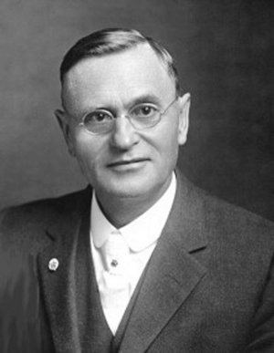

- Mâlik İlyas Tanrıbağı
Başlamadan önce, Batı ezoterizminin böyle değerli bir eserini Türk okur ve araştırmacılarına kazandırdığımız için kâlben mutlu olduğumuzu belirtmek isterim. Bu mutluluğumuzu içyüzün hikmet ve gerçeklerini araştıran, evrensel kültüre inanan, çağdaş düşünce sahibi, evrensel dış ve iç aydınlanmadan yana değer veren okurlarla da paylaşıyoruz.
Hemen belirtmek isteriz ki, Teozof Max Heindel’in bu eseri daha önce; Arapça, Bulgarca, Almanca, Hollandaca, İngilizce, İspanyolca, Fince, Portekizce, İtalyanca, Fransızca, Rumence, Rusça ve İsveç dilerine de çevrilmiştir. Bu dünya dillerinin yanına eserin yazılmasından tam ‘yüz yıl’ sonra Türkçesini de kazandırmanın dünya ezoterik ve okült kültür mirasına katkı sağlayan bir hizmet olarak görüleceğinin ümidindeyiz.
Bu hizmete başlamanın fizik organizesi 30.07.2005 Cumartesi, bir yaz günü İzmir Kordon boyunda bir çay bahçesinde başladı. Ersen, tanıştığımız ilk gün, sohbetimizin ilerleyen saatlerinde heyecanla: “Hakikat yoluna hizmette bulunmak istiyorum” dedi! Ona; “Bilgisiz hizmet olmaz, bilgi evrenseldir, insanların kaybettiği hikmetidir. Hakikate hizmet insanlığa hizmetten geçer, kâlben istiyorsan o zaman sana güzel ve kalıcı bir hizmette bulunman için yardımcı olayım” dedim.
Aradan bir hafta ya geçti ya da geçmedi, bu eseri Türkçeye çevirmesini söyleyerek bir kopyasını ona verdim. Aylar sonra, 25 Şubat 2006 Cumartesi günü çalışmalar için tekrar buluştuğumuzda birinci bölümünü tamamlamış olarak getirip teslim etti. Bu bölüm, içyüzcü aydınlanma yoluna hizmet eden değerli dostum Sn. Kemal Menemencioğlu’nun kurduğu www.hermetics.org sitesinde kitap olarak basılmasına kadar ücretsiz olarak yayımlandı. 28.02.2008 tarihinde de eserin çevirisi tamamlandı. Eserin yayınlanma konusunda ülkemizdeki insanların kitap alış, okuma, araştırma alışkanlıkları ile basım masraflarını da dikkate alıp olabildiğince az sayıda basmayı uygun gördük. Eseri 2008 yılında çıkarmayı düşünüyorduk, ancak ekonomik kriz yayınlanmasını bu yüzden bir süre geciktirdi.
Bir ‘Teozofi’ eserini ilk defa birinci elden eksiksiz olarak, araya hiçbir yorum konulmadan yazarından birebir çevrilmiş şekliyle eline alarak okumaya başlayacak okurlara aşağıda ‘Teozofi’ hakkında kısa; ancak geniş bir bakış açısından aydınlatıcı detaylı özet bir bilgi sunmak istiyorum. Konu çok geniş, gizemli, hakikat boyutu ile tarihi derinliklere de gittiğinden ayrıca konularla ilgili bağlayıcı ve aydınlatıcı olacağını öngörerek vereceğim bazı bilgilerin de yararlı olacağı fikrindeyim.
Teozofi, kısaltılmış olarak ‘Tanrı Hikmeti veya Tanrısal Bilgelik’ demektir. Bu sözcük Yunancada, ‘tanrı’ anlamındaki ‘teos’ sözcüğü ile ‘ilahi bilgelik veya tanrısal bilgi, hikmet’ anlamındaki ‘sophos’ (sophia) sözcüğünün bir araya getirilmesiyle türetilmiştir. İki farklı Teozofi öğretisi vardır. Birisi Doğu Hint Teozofisi diğeri de Batı Hıristiyan Teozofisidir. Doğu Hint ekolüne bağlı Batı Teozofisinin kurucusu, yani bu öğretiyi Batıda cemiyetleştiren Madam Helena Petrovna Hahn Blavatsky’dir. Batı Hıristiyan/İsevî Teozofisi’nin temeli Hint Teozofisi’ne dayanır, ancak genel olarak ondan daha tutarlı ve kavramsal olduğu kabul edilir.
Teozofi, ‘Tanrısal Bilgeliğin Hikmeti’ olarak, içyüz (bâtınî/içrek/
ezoterik, gnostik) ve okült (gizli/saklı) öğreti gelenekleri ile bilgisel temelinde kişiye bağlı ruhsal ve medyumsal sezgilere dayanır. Hint teozofisi gibi karışık ve çok çeşitli kavramlardan uzak, daha sade anlatımla idrak edilmesi kolaydır. Batı Hıristiyan/İsevî teozofisi de evrensel hiyerarşiyi, evrensel ilâhi güçlerin farklı işlevlerini açarak anlattığı için Hint teozofisi gibi ‘Monoteist’ olmadığı şeklinde görülür. Monoteizm, ‘Tanrı’nın var ve tek olduğunu kabul eden din, akım ve görüşlere verilen isim olarak açıklanır. Teozofi hakkındaki bu düşünce aklen sığ bir kavram yanılgısıdır. Teozofi, her iki ekolün temelinde insanların algılayarak inandığı ‘Tek Tanrı’ kavramını onların algıladığı dışsal kavramla değil, iç boyuttaki gerçekliği üzerine evrensel katmanlardaki işleyişiyle yorumladığı ve kabul ettiği için hakikati ‘Bilenler’ nezdinde temelinde ‘Mutlak Varlık’ prensibine dayandığı için monoteist olarak kabul edilir. Bu yorumların çoğu her ne kadar sezgilere dayalı olsa da öncesinde deneyimlere bağlı bilgiye sahip olduğu için hakikate yakınlaşmış durumdadır. Kurân bu gerçeğe şöyle işaret eder: “De ki: “Bilenlerle bilmeyenler bir olur mu? Doğrusu ancak akıl sahipleri öğüt alırlar!” (Zümer [Topluluklar], 9.).
Teozofi’nin temeli de ‘marifet ve hakikat ilmi’ne dayanan batınî İslâm sufizminde de görüleceği üzere mabedini taştan topraktan değil, kendi içinde, yani kalbînde inşa etmek için çalışan olgun, kâmil insana çıkar. Çünkü asıl mabet içinde Yüce Tanrı’nın bulunduğu yerdir ve bu noktada da insanın kalbîne işaret etmektedir. Yeryüzünde tanrısal ruh sahibi insandan başka Yüce Tanrı’nın içinde oturduğu hiçbir mabet ve kutsal kabul edilmiş hiçbir mekân olmamıştır, bundan sonra da olmayacaktır.
Tanrısal ve evrensel hakikatten uzak, içyüz öğreti ve gerçeklerini bilmeyen, iç boyuttan yaşayarak tecrübe sahibi olmamış, dış yüz bilgi ve öğretisine/eğitimine tâbi insanların gözünde bu yorum ne acıdır ki çok tanrılı bir inançla tek Tanrı’yı inkâr anlamına gelmektedir. Bu görüş gerçekte çok yanlış bir değer, aslı olmayan gerçek dışı bir kavramdır. Teozofi’nin en temeli mutlak varlık olan ‘Zât’, ‘Allah’, ‘Ein Soph’, ‘Parabrahma’ vb. denkteki anlama gelen ‘başlangıçsız, sonsuz ve tarifsiz mutlak varlığı’ gerçek, yani asıl Tanrı olarak kabûl eden kuramının özünü oluşturur.
Bu konuda görüşünüzün derinleşmesi için size çok basit bir örnek vermek istiyorum. Bu durumu şuna benzetirim; bir holding düşünün. Bu holdingin bir patronu ve de yüzlerce çalışanı vardır. Patron tüm işleri birebir kendisi yapmaz, yapamaz; kendisi işin, idarenin başıdır, başındadır. Yardımcıları, genel müdürleri, müdürleri, şefleri çeşitli elemanlarıyla şirket hiyerarşik bir yapıda bir bütün olarak hareket eder. Hiçbir çalışan patronun haberi olmadan, ondan bağımsız olarak, yetkilerini aşarak farklı bir iş ve idarede bulunamaz, yönetim kurulunun aldığı kararlara uymak zorunluluğu vardır. Şirketin idaresinde görev alacakların yetki paylaşımı yönetim kurulu başkanının direktifi doğrultusunda üyeler tarafından liyakatle belirlenir. Bu holdingin bünyesindeki şirketlerde çalışan tüm insanlar makamları ne olursa olsun hepsi istinasız önce şirket ve patron için çalışırlar. Patron bu işi tek başına yapamaz, işlerin yürütülmesi, hayata geçirilmesi için muhtelif elemanlara ihtiyacı vardır. Her görevli birey patronun varlığını, gücünü hissederek sanki o yanındaymış gibi, ondan aldığı yetki ile belirlenmiş bir alanda çalışır. Mutlak varlık da soyut olduğu için kendi soyutluğunun dışında ve farklı yoğun katları, yani titreşimleri tutamaz. O, hepsinde onların en soyut öz varlığı olarak bulunur; ancak onlara hükmetmek için bu yoğunlukta görünen bir temsilci atar, işlerini bu atadığı görevlilere yaptırır. Onlar idareci kadrolar olarak yönetim kurulu başkanı ile yönetim kurulunun, yani iç boyutta “Yüce Meclis”in yakınında olanlardır.
Hakikatte de durum burada olanlardan pek farklı değildir! Bu olgu sonsuz evrenin tanrısal hiyerarşisini meydana getirirken mutlak varlığa asla bir eşitlik, denklik veya şirk yaratmaz. Her şey “O”nun bilgisi altında oluşmuştur. Sonuç olarak insanların çoğu dış yüzünde sadece holding patronunun ismini duyduğu için onu tanır, onun çeşitli kademelerde çalışanlarını tanımaz! Bunu insanların inançlarına vurduğumuzda, muhtelif dinlere inanan insanlar da ‘Tek Tanrı’yı, bağlı oldukları peygamberleri bilir, kabûl eder ve “O”na yönelirler. Yüce Tanrı’nın evrenlerdeki diğer muhtelif yardımcılarından, yaptıkları işlerin detaylarından bilgi ve haberleri yoktur. İşte, bu bâtınî veya deneysel okült öğretiler çeşitli formlardaki/titreşimlerdeki yardımcıların içyüzden özler olarak tanınmasına yöneliktir, dış yüzden onlara tapınılmasına değil! Güneşin aydınlatmak veya ısıtmak için yeryüzüne kendisi gelseydi dünyada hiçbir şey canlı olarak kalamazdı, bu sebeple güneşin kendi değil; onu temsil eden ışınları gelir, ama insan güneş geldi der! İnsan bir şeyi elleri ile tutar ama, ben tuttum der. Bir şey söylerken dilini kullanır ama, ben söyledim der, yani dil, bir organ olarak kişinin ruhu, zatı adına kişiyi temsil eder.
Kurân, bu evrensel hiyerarşiye hakikat boyutundan şöyle işaret eder:
“Bizden her birimizin belli bir makamı vardır. Biziz o saf saf dizilenler, biziz! Biziz o tespih edenler, biziz” derler.[1] “Biz sizi yarattık; tasdik etmeniz gerekmez mi? Attığınız meniyi gördünüz mü? Onu siz mi yaratıyorsunuz yoksa yaratan biz miyiz? Aranızda ölümü takdir eden biziz ve bizim önümüze geçilmez! Böylece sizin yerinize benzerlerinizi getirelim ve sizi bilmediğiniz bir yaratılışta tekrar var edelim diye!”[2] Bu ayetler Yüce Tanrı’ya bağlı evrensel hiyerarşik gerçeği özet olarak Hz. Muhammed’in kalbî doğuşundan insanlara düşünmeleri için sunmaktadır. Bu ayetlerde insanın yaratıcısı olan “Biz”lerin ne olduğu, “Biz”lerin insanın ecelini belirledikleri, insanın öldükten sonra yeniden başka bir kimlikte tekrar dünyaya gönderildiğine (tekrar bedenlenme-reenkarnasyon) açıkça işaret etmektedir.
Madam H. P. Blavatsky’nin mesajlarında verdiği öğretinin temel özelliği sade bir okuyuşla, akla bağlı yeni bir yorum ürünü değil, bunun yanında onun asıl ardında saklanan Tibet Teozofi ekolünü geliştiren Mahatmaları’nın varlığının olmasıdır. Madam Blavatsky’nin Batı insanına öğretmeye çalıştığı bu ekoldeki ruhsal Mahatmaların öğretisinin rolü çok büyük ve temel etkendir. Madam Blavatsky’i araştıran insanların çoğu, onun ardındaki görünmeyen ‘Mahatma Morya’ isimli ruhsal hocasının varlığına kuşkuyla bakarak hayali, sanal bir mürşit olduğunu kabul ederler. Bu görüş veya yaklaşım bizce doğru değildir. Neden denirse, bu fikirde olan birisi ya onun yazdığı tüm eserleri eline alıp detaylıca incelememiştir ya da okuduysa bile içyüzünü ruhen kavrayamamıştır. Blavatsky’nin 59 yaşında buradan ayrıldığını düşünürsek, kısacık bir ömürde o kadar çok ve derin eserleri yazabilmesi nasıl mümkün olmuştur, bunu tek başına yapabilir miydi? Başka bir açıdan ise bu eserler, hayal kurarak yazmanın da çok ötesindedir. Blavatsky’nin inanırları/takipçileri tarafından mürşidi ‘Mahatma Morya’nın, onunla aynı çağda Tibet’te oturan ve onun kanalıyla Doğu’dan Batı dünyasına insanların uyanmaları için mesaj verdiren ‘Yüce bir Bilge’ (Eren) olduğu kabûl edilir. Max Heindel ve Gül-Haçlılar’ın bugün de geçerli olan yorumlarına göre Christian Rosenkreuz nasıl hâlen bir bedende yeryüzünde bulunuyorsa, kimi inanırlara göre Mahatma Morya da hâlen istediği veya gerektiği zaman bu yoğun plânda bulunabilmektedir! Bu öğretinin geliş yolunun ismi Madam Blavatsky tarafından ilk defa ‘Gizli Öğreti’ isimli eserinde ‘Kutsal Shambhala’ (Shambala, Shamballa) olarak anılmaktadır. Blavatsky bu konudaki bahsinde ayrıca bu terimi Mahatmalar’ın oturduğu yere işaretle; ‘Himalayalar Büyük Beyaz Locası Üstatları’ olarak da söyler. Shambhala terimi kadim Uygurlar’ın Gobi çölünde bulunan okült kayıtlarından daha sonraki süreçte Lama ve Şaman inisiyeler tarafından Tibet el yazmalarına geçirilmiştir. Tibet’in bugünde geçerli olan okült öğretisinin temeli Uygurlar’ın okült bilgilerinden gelmektedir. Uygurların okült bilgileri de ‘Kuzey Kutbunda’, ‘Hiperborea’ denen ilk kadim insanların ruhsal gelişmişliğine dayanır. Tüm ırkların geliş ve dini inançlarının tek ve temel kökenleri olan bu kadim insanların yurduna Hintliler ‘Uttara Kuru’, Tibetli Budistler ‘Khedar Hand’ (Tanrı Şiva’nın yurdu) veya ‘Şambala’, ‘Sivariya’ (Tanrı Şiva’nın ülkesi), yani şimdi söylenen şekildeki ismiyle ‘Sibirya’ demektedir. Üç büyük dinde ise bu yer ‘Aden Cenneti’ ismiyle anılır. Kadim Yunanlılar mitlerinde geçen şekliyle bu yere ‘Hiperborea’ demişlerdir.[3] Araştırmacı yazar Gene D. Matlock ‘Şambala’ sözcüğüne Ey Dünya İnsanları Hepiniz Türksünüz isimli eserinde şöyle bir açıklama getirir: “Hindu Mitolojisinde, Yılan’ı kendilerinin atası olarak kabul eden, yarı insan, yarı yılan Nagalar yarı-ilâhi varlıklardı. Onların –toprağında sayısız zenginlikler ve demir haç– olan ülkeleri kuzeyde, Hindistan’dan uzakta bulunuyordu. Bu uzak ülke Hindular tarafından, (yerinde bir tanımlamayla) Şambhu (yardımsever) olarak bilinirdi. Onu, Şambhkala (Türkçe; ‘Işıklı kale’) olarak da isimlendirdiler!.. Hindular, böylelikle Türk kültürüne karşı büyük bir itibar göstermişlerdir. Türk ırkı için, Türklerin kendilerinin bile unutmayı başardıkları kutsal hazineyi korumuş oldular! Şambhkala ülkesi Sambıl-Tashıl dağlarının eteklerinde, Han-Tengri ırmağının havzasında bulunuyordu!”[4]
Bu konu malumunuz üzere tamamen içeriğinin dışında farklı bir şekilde gündemde olduğu için okuyuculara aydınlanmaları için aşağıda biraz daha detaylı bilgi vermek istiyorum. Burada kesinlikle karıştırılmaması gereken gerçek, Madam Blavatsky’nin Shambhala tarifi ile Lamaizm’in, yani Tibet Buddhist geleneğinin Shambhala öğretisidir. Lamaist öğretiye bağlı ayinlerin özellikle ‘Kalachakra Tantra’ uygulamasının Teozof Blavatsky’nin öğretisi ile bir ilgisi yoktur, birbirinden çok farklı içerik ve uygulamalara sahiptirler. ‘Shambhala’ teriminin dünya merkezli daha farklı diğer sürümü batı dünyasında ilk defa Fransız okültist ve inisiye Alexandre Saint-Yves d’Alveydre (1842-1909) tarafından ‘l’Agarttha’ (Agartha veya Agharta), ‘yeraltı ülkesi’ anlamında anılmıştır. Polonyalı yazar Ferdynand Antoni Ossendovsky (1876-1945) de bu gizemli yeraltı ülkesini, Bolşeviklerden siyasî amaçlı olarak Moğolistan’a kaçışından sonra Orta Asya, Moğol Lamaları’nın aktardıkları kadim zamanlardan gelen okült içerikli efsanelerde geçen şekliyle ‘Przez Kraj Zwierzat, Ludzii Bogow’, yani ‘Hayvanlar, İnsanlar ve Tanrılar’ isimli eserinde kaleme almıştır. Bu eserinden hemen sonra Sibirya seyahatinde Lamalar ile Şamanlar’dan topladığı bilgilerden derlediği; ‘W Ludzkiej i Lesnej Kniei’, yani ‘Asya’da insan ve Gizem Perdesi’ adını taşıyan eserini yayımladı. Ossendovsky’nin eserleri, kendi siyasî fikirleriyle, kültürel eğilimlerini yansıtmanın yanında asıl, seyahatlerinde gittiği yerlerin ilginç geleneklerini, bâtınî ve batıl inançlarının gizemli tasvirlerini sunmaktadır. Tüm bu gizemlerin dayandığı temeli, geliş yeri Orta Asya’da yaşamış kadim Uygur Türkleri’nin var oluş mitlerinden olan ‘Ak Ada’dır. Bunu Arkeolog Harold Wilkins’in de desteklediğini söyleyen araştırmacı Peter Colosimo, çok eski bir Hint yazıtından şöyle bir pasaj aktarır: “Ulaşılmaz yüksekliklerden hızla inerken çıkardığı gök gürültüsü gibi sesiyle, gökyüzünü ateş dilleriyle dolduran alevlere bürünmüş olarak, Ateş’in Oğulları’nın arabası, Parlak Yıldız’dan gelen Alev Tanrıları’nın arabası göründü. Gobi denizi’nin yemyeşil ve göz kamaştırıcı, mis kokulu çiçeklerle örtülü Ak Ada’sı üzerinde durdu” der. Yine bu konuda, tüm bâtınî ekollerden öğreti alıp, Gnostik Kilisesinde piskoposluğa kadar yükselip sonra bâtınî İslâm’da karar kılan (ve 1912’de Müslüman olarak Abdül Vahid Yahya adını alan) Fransız asıllı Mısırlı düşünür ve yazar René Guénon (Jean-Marie-Joseph, Blois-1886-1951-Kahire) da Kıyâmet İşçileri Ülkesi Agarta’nın Öyküsü (Le Roi Du Monde, 1927) isimli eserinde bu yeraltı ülkesini yorumlamıştır. A. V. Yahya’ya göre; ‘Gobi tufanından sonra, yüksek inisiyeler olan bu uygarlığın sahipleri Himalayalar’ın altındaki mağaralara çekilip yaşama orada devam ediyorlar. Yaşadıkları yeraltı merkezinde de sağ ve sol olarak iki kola/yola ayrılıyorlar. Sağ yol, yani fizik dünya ile ilgilenmeyen iyiliğin ruhsal sahipleri Agarta’yı, sol yol kötülüğün sahipleri de fizik dünyanın idaresi üzerinde söz sahibi olacak Shambhala’yı oluşturuyor. Yeryüzündeki kâhinler, okült insanlar sadece Shambhala ile irtibata geçebiliyor, Agarta ise kapılarını kapatarak hiçbir şekilde kimseyle irtibata geçmiyor. Zamanı geldiğinde kötülerle savaşmak için yeryüzüne kendi savaşçılarını gönderecekler’ denmektedir.
Yeraltındaki Agarta’yı bulmak için şimdiye kadar birçok serüvenci Orta Asya’ya araştırmaya gitse de yerel halkların anlattıkları atalarından gelen efsanelerin dışında elle tutulur hiçbir şey bulamadan geri dönmüşlerdir. Irkçı faşist Adolf Hitler bile bu uygarlığın peşine düşmüş, adamlarını bu ülkeyi aramaya göndermiştir. Bayrağındaki gamalı haç, kadim Uygurlar’ın Hunlar’dan da çok önceki atalarının Atlantis ve öncesinde kadim çağlardan, Hiperborea’dan gelen okült ve evrensel swastika’nın simgesidir. Çok farklı yerlerdeki arkeolojik buluntular da zaten bu durumu tamamen doğrulamaktadır. Swastika, dört yön, dört güç, dört unsura işaret eden evrensel yaratımla ilgili okült bir simgedir. Dalai Lama’nın yönettiği Kalachakra ritüelinde oturduğu makamının önünde aşağıya doğru sarkan iki ayrı beyaz küçük flamaya işlenmiş kırmızı ve yeşil gamalı haç, yani swastika figürleri bulunur. Bunların dışında da okült temelinde genelde bilinmeyen giziyle iki kutuplu güç olan merkez-gir ve merkez-kaç güçlere işaret eder. Şimdi, buraya kadar anlattıklarımızın yer sorunu nedeniyle yazmadığımız detaylarındaki bilgilerle toparlayıp içyüzünde birleştirip yorumlarsak karşımıza yeryüzündeki tüm inançlarda bulunan ‘kurtarıcı’ imgesi çıkacaktır.
Tüm bu bilgilerin ışığında Şambala ile Agarta’nın, Türklerin Bozkurt destanından çıkma Ergenekon destanı ile hiçbir ilgisi yoktur. Ergenekon destanında geçen konu Göktürkler’in büyük bir savaş sonrası yok olmaktan kurtulup, Ergenekon adını verdikleri yurtta çoğalarak Orta Asya’da tekrar güç ve hakimiyet kazanmaları üzerinedir. Bu durumda da Ergenekon destanını MS 400-552 aralığında değerlendirilmesi gerekir. (Göktürkler MS 552-745) Göktürkler’in ataları olan Büyük Hun İmparatorluğu’nun kuruluşu bile MÖ 4. yy’a dayanır. Bundan daha eski olanlar ise Saka Türkleri olup tarihleri 7. yy’a hatta birkaç yüzyıl daha da geriye kadar gider. En eski Türk destanı olarak kabul edilen Alp Er Tunga destanı Saka (Yakut) destanıdır. Saka Türkleri’nin diğer ismi İskitler’dir. İskitler ile Kimmerler proto-türk kavim olarak kabul edilir. Bu anlamda meraklılarının okuduğu ‘Kimmerli veya Kimmeryalı Conan’ da sanal Türk çizgi kahramanı olmaktadır! Saka Destanı daha sonraki Türk destanlarında geçen kahramanlıkları etkilemiştir, yani onun farklı ve kısmi olarak yeni sürümleridir. Bu sebeple özellikle Şambala miti bu tarihlerden binlerce yıl öncesinden gelmektedir ve tamamen ruhsal boyutla değerlendirilmelidir. Ama tüm bu anlatılanlar arî ırkın ilk Türkler olmadığı anlamına gelmez. Şöyle ki, Türklerin Şaman kökenleri onların kadim ataları olan Hiperborea’dan gelmektedir. Kuzey kutbu, çevresi ve Orta Asya tüm zamanlarda Türklerin yaşam alanları olmuştur. Bu bile Türklerin en kadim temel, kök ırk olduklarına yeterince açık tarihi bir delildir. İstisnası olmaksızın tüm dinler temelinde Şaman kökenlidir, çünkü Şamanizm; tüm evrensel titreşimlerle iç boyutlarla ruhsal irtibat kurmaya dayanır. Yine bu bağlamda tüm peygamberler, erenler, ruhsal bilgeler, titreşimleri, ruhsal keşifleri farklı Şamanlardır!
Blavatsky’nin öğretisinde bu kurtarıcı ‘Maitreya’, Moğol Lamaları’nın aktarımlarında ‘Brahitma’, Tibet Lamaizm’inde ‘Çakravartin’ (Rahip-kral), Zend Avesta’da ‘Saosyan’, Musevî ve Hıristiyanlarda ‘Mesih’, Müslümanlarda da ‘Mehdi’ olarak isimlenmektedir. Soyut yeraltı ülkesi olan Agarta’nın Ortadoğu’daki binlerce yıllık kadim sürümü ise ‘Mısır’ın Ölüler Kitabı’ndaki ölümden sonra gidilen yeraltı krallığının öğretisine de işaret etmektedir. Yeraltı ülkesinin krallığı bundan başka, kadim Sumer’de de aynen Eski Mısır’da olduğu gibi sandal ile ‘insan yutan nehir geçilerek gidilen bir ülke’dir. Yeraltı krallığı Sumer’de önce ‘Dağ’, sonra ‘Kur’ (yabancı ülke) olarak anılmıştır. Tevrat-İşaya-14:9-11. de Babil konu edilerek yine bu konu geçmektedir. Stephen Langdon tarafından 1919 da yayınlanan University Museum’a ait bir tablette şiir şeklinde bir Sumer kralının yeraltı dünyasında başından geçenler anlatılmaktadır. Eski Yunanlıların ‘Hades’i, İbranilerde Samuel’in ilk kitabında (Bölüm 28) kral Saul’un isteği üzerine peygamberin gölgesinin ‘Şeol’den (Cehennem) yukarı çıkması hep aynı gerçeğin tarihsel farklı sürümleridir. Yine bu konuda Sumer’de, ‘Gılgamış, Enkidu ve Yeraltı Dünyası’ destanında (Bölüm 23) bilimsel olarak bu konuyla aynı paralellik görülmektedir. ‘Yeraltı Ülkesi’ denen terim çağlar boyunca farklı aktarım, yorum ve dillerde değişikliğe uğrayarak günümüzdeki soyut şekil ve inanç değerini almıştır. Okült alanda özgün anlamda iç boyut sırlarını saklayan bu öğreti dış yüzden tamamen maddeleştirilerek fizik dünya yaşamına indirgenmiştir. Yeraltı ülkesinin klâsik dinlerdeki ismi “cehennem” olarak anılmaktadır.
“Cehennem” sözcüğü, Kudüs’ün güney tarafında bulunan Hinnom Vadisi’nden gelmektedir. Bu sözcüğün İbranicesi Ge Hinnom’dur. Ge Hinnom, Hinnom’un oğlunun vadisi olarak bilinir. Bu vadiye Gözyaşı vadisi de denir. Ge Hinnom ismi Arapçaya Ge, Ce olarak geçerek Cehinnom, Cehennem olarak şekillenmiştir. Ge Hinnom vadisi, kadim çağlarda Tanrı Molek için insanların çocuklarını kurban ettiği yerdir. MÖ 7. yy’da Kral Josiah bu kurban şeklini yasaklamış ve orada bulunan sunak mabedini de yakıp yıktırmış. Bundan sonra bu vadi Kudüs’ün çöplerinin döküldüğü yer olmuş. Ölen mahkûm ve idam edilen suçluların cesetleri, hayvan leşleri burada yakılmaya başlanmış. Bu iğrenç görünüm ateşin sıcaklığı ve kötü kokuyla da birleşince ilerleyen süreçte Ortadoğu coğrafyasında Cahinum olarak anılırken dinlerde de kötülerin gideceği, yanacağı yer olarak şekillenip cehennem’e sözcüğüne dönüşmüş.
Shambhala terimi ruhsal olarak idrak edilirse; ‘Huzur yeri, sakinlik, mutluluk’ veya ‘Sâflığın olduğu yer, Özlerin yurdu, Emin yer’ anlamlarına gelmektedir. Madam Blavatsky’nin kalemi farklı, mesajları oldukça uzun ve kapalıdır. Bu sebeple onları dış yüzden okuyanlar iç anlamının kavram yanlışlığına düşerler. Blavatsky, ‘Shambhala’ terimiyle iç boyuttaki, yani ruhani tecellileri devam eden ‘Büyük Beyaz Loca Üstatları’nı anmaktadır. Bunun daha açık tercümesi ise; ‘Rûhsal Dünyanın İdarecileri’, yani erenler anlamındadır. Shambhala öğretisinin içyüzü, şahsi yorumuma göre insanın içindeki tanrısal sırlarına uyanış devrelerini içermektedir. Bu konu şimdiye kadar yüzeysel olarak anlatılanların dışında çok daha derin gizlere açılır. Önümüzdeki süreçte bu konuda yeni farklı bilgilerin gün ışığına çıkacağını umuyorum. Madam Blavatsky’nin ifade ettiği Şambala öğretisi ile A. V. Yahya’nın yorumladığı öğreti birbirine ters düşmektedir. A. V. Yahya Şambala’yı sol yol olarak gösterirken, Madam Blavatsky ona ruhsal kutsallık yükleyerek ‘Himalayalar Büyük Beyaz Locası Üstatları’ olarak anmaktadır. Araştırmalarıma göre Madam Blavatsky bu konuda doğru ve haklıdır. Çünkü verdiği tüm mesajlarında bunu büyük bir evrensellikle işlerken, kötülük üzerine değil; insanlığın ahlâk ve evrensel aydınlanma yoluna hizmet ederek ruhsallığını ancak kendi içindeki özüyle kazanabileceğine işaret etmektedir. Şu hâlde Kutsal Şambala asla kötülerin yolu değil, evrensel iç aydınlanma için çalışan ahlâk sahibi insanların yoluna işaret işaret etmektedir.
İçyüzün (Bâtinî) derinliğini bilmeyen farklı görüşlere sahip olanlarca Shambhala, Madam Blavatsky tarafından uydurulmuş, hayal ürünü bir yer olarak öngörülür. Oysa ki Shambhala öğretisi, bu orijinal Sanskritçe sembol ismiyle Madam Blavatsky’nin daha dünyaya gölgesi bile düşmemişken, ondan binlerce yıl öncesine dayanan Orta Asya Uygur Türkleri, Sibirya, Hint ve Tibet okült Lama ve büyük Şaman üstatlarının gizli ilimlerinde evrensel sırların saklandığı ve rûhen liyakat sahibi olanlara aktarılan bir geleneğin içyüzünü temsil etmektedir. Dolayısıyla Shambhala öğretisi soyut, evrensel ve tanrısal titreşimlere ait ruhsal bir kavramı içermektedir. Yoksa tamamen sulandırılarak anlatılanlar gibi, fizik dünyanın içinde ne şehirler, ne de bu şehirlerde yaşayanlar, ne de dünyanın bir yerinden bu hayali şehirlere veya böyle bir ülkeye giriş kapısı vardır. Bunlar gerçeklerden tamamen saptırılmış, hiçbir gerçekliği olmayan gizemlerle süslenmiş bâtınî fantezilerdir. Ancak iç boyutta, dünyada yaşarken de yaşanabilen ruhsallıkla ilgili gerçekliği vardır.
Madam Blavatsky, 1875 yılında New York’ta, Henry Steel Olcott ve William Q. Fudge ile birlikte Hint teozofi ekolüne bağlı Batı Teozofi Cemiyeti olan ‘Theosophical Society’i kurarak hayata geçirmiştir. ‘Theosophical Society’ isimli dernekle Batıda Doğu teozofi öğretisini yaymaya çalışan Madam H. P. Blavatsky’nin temel bilgisi, Hint teozofisi, Doğu ekolleri içyüz (ezoterik/gnostik) öğretisi ile Batı okült ekolünün yeni bir kavram ve çağdaş yorumlarına dayanmaktadır. Blavatsky’nin vermeye çalıştığı bu öğretinin amacı dünyanın, yani insanlığın kurtarıcısı olacak ‘Maitreya’nın yeryüzüne geliş ortamını insanlığın nezdinde evrensel bilgi, bâtınî kültür ve bunlara bağlı olarak ruhsal bakımdan hazırlamaktı. Max Heindel de Madam Blavatsky’den etkilenip bu cemiyetin üyelerinden birisi olmuş daha sonra da iç aydınlanmasını yapıp onlardan ayrılarak bir teozof olarak bâtınî Mesihçi Hıristiyan öğretisine dayalı kendi ruhsal mesajlarını vermeye başlamıştır. Teozofi Cemiyeti’nin üç temel ana ilkesi vardır: 1- İnsanlığın evrensel birliği için; renk, ırk, dil, din, inanç ve cinsiyet ayrımında bulunmamak. 2- Din, bilim ve felsefe sınır ve kurallarının ilerisinde bağımsız olarak çalışmak. 3- Doğanın henüz bulunmamış yönleriyle, insanın daha ortaya çıkmamış yeteneklerini araştırmak.
Bu üç temel madde, cemiyetin evrensel manifestosunun özü olup, kapısını düşünen, araştıran, insanlık için çalışan tüm insanlara açmaktadır. İlk maddesinde belirtildiği üzere insanlar arasında hiçbir ayrım yoktur. Hangi inançtan olursa olsun, has inancıyla bu cemiyette yer bulmaktadır. Tek şart, ayrım yapmadan ‘evrensel birliğin’ oluşumuna katkı yapılmasıdır. Batı Hıristiyan Teozofisinin dünyaca tanınmış yakın zamandaki diğer üyelerinden birkaçı; ‘Max Heindel, Rodolf Steiner (Antropozofi’nin kurucusu), William Crookes, Thomas Alva Edison, William Butler Yeats’ gibi isimlerden oluşmaktadır.
Batı Hıristiyan teozoflarının görüşleri, ‘Ruhun varlığı’, ‘fizik bedensiz varlıklarla irtibat kurmak’, ‘ruhun tekamülü’, ‘reenkarnasyon’, ‘varlığın kendi iradesine bağlı olarak eylemleriyle yaşam plânını oluşturması, yani karmasına bağlı kaderi’ konularında spiritüalist görüşlerle paralellik taşır. Ancak onlardan ‘ruhun madde ile irtibatı’ konusunda ve bazı detaylarda ayrılırken, kendi ekolü içinde de bu konuda farklı düşüncelere sahip yorumlara da yer vermiştir. Batı Hıristiyan teozoflarının tamamına yakını, Madam Blavatsky’nin değerli öğrencisi Annie Besant’ın Doğu ekolünden beslenen görüşünü kabul ederler. Annie Besant’ın görüşüne göre, varlığın anatomik yapısı 7 plânda ya da formda ele alınır. Bu yedi plân, üst üç ve alt dört olmak üzere iki kısma ayrılır. Yoğunluğa iniş olarak alt dört, Mental beden, Astral beden, Eterik (Esîrî) beden ve Fizik beden. Ruh, yani ‘Tanrısal Öz’ konsantrasyonunu en alttan başlayarak yükselttiğinde (ki bu ‘ruhun yükselmesi’ olarak ifade edilir) kullandığı bedenleri olan bu elbiseleri tek tek çıkararak kendini asıl kendinin bulunduğu titreşime çeker. Bunun burada bilinen diğer adı insanın ölmesidir. Spiritüalistler bu görüşe karşı çıkarak kabul etmezler, onlara göre ruh ile fizik beden arasındaki irtibat elemanının Eterik, Astral ve Mental bedenler şeklinde birbirinden kati sınırlarla ayrılmış katlar biçiminde düşünülmesi ve ruhun irtibat aracının özün yükselmesine paralel şekilde kısım kısım terk edilmesi düşüncesidir.[5] Annie Besant’ın genelde kabul görmüş bu tezinden başka, teozof C.W. Leadbeater’in savunduğu görüşü: ‘Ego (Ruh) ve fizik beden dışında, insanı oluşturan bir eleman (unsur) daha vardır. Bu ‘elementel cevher’ dediği üçüncü unsurdur. Bu üçüncü unsur, içgüdüye tâbi, ‘Ruh’un ters yönünde eylemde bulunarak daha da yoğunlaşmak için çalışan ve ruhun her plândaki bedenlerine hayatiyet (canlandıran) veren unsurdur.
Max Heindel’in okuyacağınız bu önemli eserinde, yazar bu konu hakkındaki görüş ve detaylarını anlatarak ortaya koymaktadır. Onun bu konudaki açıklamaları ‘7 plân’ üzerinden yapıldığı için Annie Besant’ın görüş ve kuramını destekler niteliktedir. Madam Blavatsky’nin dünyadan ayrılmasından sonra bu görevi 1890 senesinde spritüalizmden uzaklaşıp teozof olan İngiliz İşçi Hareketi üyesi, Hindistan’ın bağımsızlık mücadelesi için çalışmış sosyalist Annie Besant ile C. W. Leadbeater üstlendi. İlerleyen yıllarda her ikisi de Dünya Öğretmeni, yani ‘Maitreya’ olarak öngördükleri Jiddu Krishnamurti’nin onun için kurdukları ‘Doğu Yıldızı Örgütü’nü 1929 yılında dağıtıp teozofi cemiyetini terk ederek her şeye başkaldırması karşısında büyük bir hayal kırıklığına uğrayarak teozofi öğretisinin de gözden düşmesine sebep oldular.
Bâtınî farkındalıkla bakabilenler için tüm bâtınî öğretiler, mesajlar, hikmetler, ilâhi değerler tek hakikate çıktığından dış yüzdeki dinlerin üstünde, tanrısal zenginliği yansıtan çeşitlilikle gerçek ve bir konumdadırlar. Dünya vitrinindeki dinlerin üstünde bir konumda olmaları da içyüzlerinde aynı “Hikmet”in farklı açılımlarına işaret ediyor olmalarından ileri gelir. Bu gerçek, bilenler tarafından dış yüzde dinler adı altındaki birbirine düşman kutuplar olsa da, içyüzde tüm dinler veya bu dinlere bağlı evrensel inançlar saygı, sevgi, barış ve uyum içinde aynı gerçeğin etrafında toplanmış olarak tek hakikati konuşur, ondan beslenir, nefes alır ve yaşarlar. İçyüzdeki gerçekler, dış yüz bilgisine sahip dinlerin, inanç, düşünce ve uygulamaların her zaman, her devir, üzerinde bir farkındalıkla gerçek olarak yaşanır ki bu sebeple evrensel gerçekler tüm zamanlarda merasim dinlerinin üstünde gerçek tanrısal konumlarındadır.
Bu fakîrin yorumuna göre: ‘Teozof, evren ve içindekilerle tanrısal kucaklaşma için çalışan, gerçeklere özü tarafından farklı titreşimlerde uyandırılmış sezgileri ve bilinci yüksek evrensel olgun insandır. Böyle bir insan kazandığı titreşimine göre evrenle bütünleşir, bu bütünleşme titreşimler yükseldikçe, yani arınma üst boyutlara vardığında Tanrısal gerçekliği yaşamaya başlar ve toplam evrene (sonsuz uzay-zaman) tanrısal gözle bakmaya başlar. O zaman her varlığın özünün kendi ilâhi özünden oluştuğunu içyüzünden hakkıyla tam olarak kavrar!’ Buna Türk-İslâm batınî (ezoterik) öğretisinde; ‘Hakk ile hak olmak’ da denmektedir.
Böyle bir durumun örneğini de; ‘Ben Hakk’ım’ (Enel Hakk) diyen marifet ehli büyük batınî sufi Hallac-ı Mansur’da görmekteyiz. Bu da demektir ki, tanrısal özünün gerçekliğine uyanmış, ruhen, fikren, aklen özgür bir insanı asla şekilci bir dini kalıba sokamazsınız! Çünkü o, bu sığ, daracık kalıba sığamaz taşar! Bu yüzden içyüze, hakikat boyutuna değer veren insanlar, dış yüz, yani seremoni dinlerine bağlı şekilci insanlardan her zaman, her devirde çok daha az sayıdadırlar.
Bunun daha iyi kavranması için şu örneği verebilirim: ‘Kâbe, Müslümanların kıblesidir. Bir Müslüman Kâbe dışında, bulunduğu coğrafyada ibadet edeceği zaman onun bulunduğu yöne doğru dönerek ibadetini yapar. Ama gidip de Kâbe’nin içine girince yön kalmadığından tüm yönler tek merkezde toplanır. O zaman nereye dönse hep aynı hakikatle baş başadır; merkezin içindedir, çünkü kıblenin içinde başka bir kıble yoktur, hedefe varan hedefle bütünleşir. Merkeze varan merkeze ermiş olarak katılır, merkezin ayrılmaz bir parçası olur. Dış yüzdeki perdeleri kaldırınca tek hakikat ortaya çıkar, tüm dinler bu merkezde toplanır, aynı gerçeğin farklı elbiselerinden soyunmuş, tek bedeni olarak görünürler. Tek mekâna açılan beş kapıyı ayrı ayrı boya ne fark eder? Sadece giriş yönleri farklı olsa da neticede beş kapıdan da ayrı ayrı girenler aynı odanın içinde buluşmazlar mı?...
Hakikati bilen için de Kâbe, soyut manada “Secde edilen ÂDEM”, yani evrensel Rabb denen öze simge olan bir yapıdır. Asıl Kâbe’nin kendi kâlbi olduğunu, gerçek Âdem’in de burada “RÛH”u olarak oturduğunu yakından, şahit olarak bilir. Çünkü her an “O”nun sesini “VİCDÂN”ı olarak duymakta, “O”nun varlığına böylece, görmese de yaşarken yakından, içinden şahit olmaktadır. Bu ses, senin ancak öldükten veya erdikten sonra görebileceğin biricik Tanrı’nın sesidir. Bu gerçek, dini inancı ne olursa olsun veya hiçbir inancı olamasın istisnasız her insan için geçerlidir! Tüm insanlar, tüm zamanlarda içyüzlerinde tek tanrısal gerçek tarafından kuşatılmıştır. Bu formüle “Allah’ın değişmez yaratımı (fıtratı)” denir. Bu gerçeği bilerek kişinin kendi kâlbinde saklı tanrısal özüne yönelmesine de; “dini hanîf olarak uygulama” denir. “O hâlde yüzünü, dine bir Hanîf olarak tut, O Allah fıtratına ki insanları onun üzerine yaratmıştır. Allah’ın yaratışına bedel bulunmaz, dosdoğru/sabit din o dur ve lâkin insanların çoğu onu bilmezler!” (Rum suresi, 30.).[6] Ayeti evvelinde ve sonrasındaki tüm çağlarda bu tanrısal hakikate işaret eder.
İnsanların, dili, inancı, rengi, boyu, ırkı, inancı ve imanı ne olursa olsun bu (formül) asla değişmez, değişemez. Bakın imanı da diyorum! İman da tektir, insanların inançlarına bağlı bu duyguları (titreşim) özleri tarafından tercüme edilerek tanrısal lisanla hakikate adapte edilir ki, bu yüzden hiçbir insanın hakkı yenilmez! Bu bağlamda da gerçek adept; ‘kendini arıtarak daha fizik plânda yaşarken tanrısal titreşimlere katılan, onlara uyum sağlamış, ruhen onlardan beslenen tanrısal insandır!’Aynı titreşime çıkmış insanların cenneti de birdir, aynı alt titreşime düşmüş insanların cehennemlerinin de bir olduğu gibi. Hakikat boyutlarındaki titreşimlerde buradaki dini inançları ne olursa olsun birlikte bulunurlar. Orada peygamberler de birdir! Neden, nasıl? Hepsinden görünen tek “ilâhi Ruh” olduğu için! Ne Yahudi’nin, ne Hıristiyan’ın, ne Müslüman’ın, ne de başka bir dinden olanın cennetleri ayrı değildir. Total evrende tek bir ‘Anayasa’, yani “Ümmül Kitab” vardır, o da ‘genel ahlâk/erdem yasası’dır. Bu yasaya uyan insanların titreşimleri ne ise hepsinin cennetleri de odur, ahlâksızlıkları ne ise cehennemleri de...
Kurân bu gerçeğe şöyle işaret eder: “Şüphe yok ki, iman edenler, Yahudiler, Hıristiyanlar ve Sabiîler, bunlardan her kim Allah’a ve ahiret gününe gerçekten iman eder ve salih amel işlerse elbette Rabb’leri katında bunların ecirleri vardır, bunlara bir korku yoktur, bunlar mahzun da olacak değillerdir!” “Bir de “Yahudi ve Hıristiyanlardan başkası asla cennete giremeyecek” dediler. Bu onların kendi kuruntularıdır. Sen de onlara de ki; “Eğer doğru iseniz, haydi bakalım getirin delilinizi!” “Hayır, hayır! Kim özü iyilik dolu olarak yüzünü Allah’a tertemiz döndürür ve teslim ederse, işte onun Rabb’i katında ecri (ödül) vardır. Onlara hiçbir korku yoktur ve onlar mahzun da olacak değiller!”[7] “Muhakkak ki inananlar, Yahudiler, Sabiîler ve Hıristiyanlardan kim Allah’a ve ahiret gününe iman eder ve güzel amel işlerse, onlar için bir korku yoktur, onlar mahzun da olmayacaklardır!”[8] Bu ayetler yukarıda yazdığımız tanrısal gerçeği idrak edeceklere evrensel inançlar arasında hiçbir ayrım yapılmadığına açıkça işaret etmektedir.
Tüm peygamberler tek hakikatten çıkmış, onun tek dilini konuşan, “Kutsal Rûh”un fizik plânda bir bedenden görünebilen yansımalarıdır. Bu tek gömlekten, Âdem, Şit (Şiş/Seth), İdris (Eski Mısır’da Hermes), Nuh, İbrahim, Lût, İsmail, İshak, Yakub, Yusuf, Eyüb, Salih, Hud, Yunus, Şuayb, Lokman, Musa, Harun, Davud, Süleyman, İlyas, Zekeriya, Yahya, İsa, Muhammed’in başları çıkmıştır. Bu peygamberlere Doğu’nun Yüce Bilgelerinden (Hakeren ve Erenler) Rama, Krişna, Buddha, Konfiçyus ile Zerdüşt’ü, Antik Yunan’da da Orphe, Pitagoras, Platon, Tyanalı Apollonius vb. de dâhil ediyoruz.
Ezoterik bilgi ve idraktan yoksun olarak çağdışı, softaca, radikal ve sığ düşünenler her devir, hangi dine mensup olursa olsunlar anlayamadıkları bilgiyi veren eserler hakkında hemen; ‘dinlerinin zarar göreceğini düşünerek’ sert, radikal bir tavır alırlar. Oysa dinin zarar görmesi diye bir gerçek yoktur. Din soyut bir değer olarak hakikatteki yerinde her zaman gerçek tanrısallık olarak, tanrı katında bulunmaktadır. Din zarar görmez, bu yanlış kavram aslında insanların kavrayamadıkları gerçekler karşısında, safsatalara inanmaları sonucunda gerçeklerle yüzleşmeye duydukları dış yüzden, sosyolojik, yani insan ilişkileri bakımından doğan yapay, kişiyi nefsen aldatıcı, vesvese veren bir korkudur. Tüm dinlerin süreçleri bugüne kadar dikkatle gözden geçirilirse gerçeklerin değil, dine en büyük zararın uydurulan safsata ve hurafelerle dışyüzden verildiği görülecektir. Zaten günümüz itibariyle insanların bu konuda geldikleri nokta bu acı gerçeğin vitrinde sergilenen en büyük delili değil midir?..
Bu korkunun cehaletle radikal dışavurumu da insanlarda kendi dar fikirlerinin savunulması şeklinde akılcılıktan uzak, mantıksızlık olarak ortaya çıkmaktadır. Dar kapsamlı, sığ düşünce de temelinde iman veya inanç ile çelişir. İmanı zayıfsa ve kişi kendi içinde gelgitler yaşıyorsa bu, onun dışyüzden görünmeyen en büyük gizli sorunudur. Bu sebeple Tanrı’nın gizli müşrikler hakkında; “ben onların kâlplerini bilirim” demesi bu duruma yeterince işaret etmektedir. Kim kimin içindeki imanını biliyor, kim kimin imanının, dininin koruyucusudur; bu şeklen mümkün müdür, değil. Dış yüzünden şekilcilikle korunmaya çalışılan din ne kadar sağlıklıdır? Dış yüzden dindar görünen bir insanın içindeki imanını kim neyle ölçebilir ki, onun inanç ve imanını bilebilsin. Din diye aşırı şekilcilik ve hurafelere körü körüne bağlı radikal görüşlü yozlaşmış insanlar, öğrenmek, düşünmek, idrakini yükseltmek isteyen, araştıran, hakikatin içyüzünü ve kendini içinde tanımaya çalışan, evren denen sahneye yüksek farkındalık ve insanlara, evrene genel perspektifle bakarak gerçeği görmek isteyenleri sindirmeye, önünü kesmeye, yıldırmaya, toplumdan dışlamaya, hatta öldürmeye de çalışırlar. Tarih süreci bu konuda cahillerin, radikal zalimlerin katlettikleri düşünür, aydın, bilge ve peygamberlerle doludur. Kutsal kitaplarda bile bu acı gerçekler yazmıyor mu? Düşünün ki, gönderdiği elçilerin cahiller, zalimler tarafından zulmüne uğramasından Tanrı bile yakınmaktadır!
Oysa evrensel aydınlanma önce ‘Akıl’ ve ‘Bilgi’den geçmektedir. Yüce Tanrı her çağda bilgiyi ön plânda tutarak, insan aklının gelişmesi için birçok şekilde insanlara yol göstermiştir, hâlen de göstermektedir. Akıl ve bilgi, sezgilerin güçlenmesini, gelişmesini, yükselmesini sağlar. İnsanlığın aydınlanma sürecinde peygamber olarak kabul edilen tüm kişiler bulundukları zamanların en bilge, en bilgin, en aydın, en çağdaş, en ilerici, en akılcı, reformist, devrimci kişileridir. Onların bu durumlarına, verdikleri mücadeleleri yeterince ışık tutar. Bu yüzden onların hepsi bilgi ve aklı kullanmanın önderleri, toplumları aydınlatıcı, çağdaşlaştıran ışıklarıdır. Aydınlanmanın temeli akıldır, çünkü Allah’ın bu dünyada insanlara verdiği en büyük nimet, yani hikmet akıldır. Akıl olmasaydı ne yapardık? Gerçekler üzerinde nasıl düşünür, ne öğrenirdik. Aklın değerini bilen insanlar; ‘Allah’ım aklımı başımdan alma’ diye duâ etmezler mi! Akıl, aydınlanmanın, yaşamın, geleceğin ışığıdır, bundan yoksun bir insan, bırakın ahireti, daha burada karanlıkta kalmıştır. Kurân da birçok âyette insanlara aklını kullanmaları ve derin düşünmeleri tavsiye edilmektedir. Aklı kullanmak, çağdaş olmak, çağın nimetlerinden faydalanmak ahlâksızlık değildir. Ahlâksızlık önce, Tanrı’ya rağmen buna karşı gelerek insanlardan men etmek, sonra da kişinin kendi hayvansal nefsinin zarar verecek isteklerine uyarak manen ve madden kirlenmesidir. Tanrı, aklını kullan diyorsa bu, tüm zamanlarda çağına göre düşün, çağdaş ol, hatta çağın da ilerisinde bulunmaya çaba göster anlamında ilâhi bir işarettir.
Evrensel aydınlanmayı başlatan yüce tanrı’dır. Şayet böyle olmasaydı Resûl Musa’nın ilk kitabının 3. ayeti Tanrı’nın “ışık olsun” sözü ile başlamazdı. (Tevrat/Yaradılış, 3.) Bu hikmetin içyüzünün farklı derinlikteki okült yorumları olsa da, dış yüzde bu şekliyle bile büyük bir anlam taşımaktadır. Bu sözün doğruluğu bugün bilimsel olarak da kanıtlanmıştır. Yani Tanrısal ışık, evrenselliğin ilk olarak aydınlanma denen yaratımla başladığına işaret eder. Bu gerçeği gören her insanın tanrısal olabilmesi için bu evrensel eğitimdeki yerini almak zorunluluğu vardır. Bu eğitimin buradaki başlangıcı da gericilik ve sığ düşünceyle değil, ilerici, çağdaş düşünce, bilim ve akılcılıkla yapılır. “Tanrı ışığın iyi olduğunu gördü ve onu karanlıktan ayırdı.” (Tevrat/Yaradılış, 4.) sözü, farklı derinliklerdeki okült anlamlarının tamamen dışında, dışyüzden bile evrensel bir yaklaşımla, bağlamla tüm insanlara yönelik aydınlanmanın haberi, müjdesidir. Nitekim bu gerçeğe Kurân’da şu âyetlerle işaret edilmektedir: “De ki: “Hiç kör ile gören bir olur mu? Hiç karanlıklarla aydınlık bir olur mu?”[9] “Ne kör ile gören eşit olur, ne de karanlıklar ile aydınlık.”[10]
İnsan, kendi inandığı hakikatin içyüzünü bilmiyorsa, dıştaki her bilgi ve inanca korkarak bakar, ondan uzaklaşır, kapılarını kapatır, idraktan, düşünmekten, görmekten yoksun kendi kısır döngüsüne kendini hapseder. Aslında bu durum onun kendi inancı ile gizli olarak içinden yüzleşmesidir! Ona kendi cahil bilgisinden dolayı güvenemediğinden, onu tam olarak bilemediğinden, babasından gördüğü gibi bulduğundan, emek vererek, aklını kullanarak düşünüp, araştırıp, kıyaslayarak bir şey öğrenmeyip cahil kaldığından, tembelliği yüzünden kitap okumayışından, uydurmalara inandığından, dünya/nefs ehli çıkarcı din tacirlerinin tuzağına düştüğünden, din adı altındaki uydurma aslı olmayan bilgilerine rağbet ederek bunu ahiret kurtuluşu için yeterli gördüğünden, din adı altındaki yapay şekilcilikle beslendiğinden karşısına ondan çok daha güçlü onu yıkacak, savuracak bir bilginin çıkmasından korktuğundandır! İnsan aklının temeldeki bu tutucu durumu geçmiş dönemlerdeki burçların etkisinden kaynaklanmaktadır, yani bu dönemin bilinçler üzerinde kalan izleri hâlen genlerle taşınan etkileridir. Şimdi, Kova çağı etkilerinin yakınlarında sayılırız ve bu tutucu düşünce son yüksek derecesinde direnmeye devam ediyor. Çok değil, 100-150 sene sonra bu geçiş tamamen bittiğinde ve Kova çağının asıl yükseltici etkisi görülmeye başladığında bu etkiler yavaş yavaş eriyecek ve sonunda onlardan eser kalmayacaktır. Hatta yakında 2012 yılından sonra bile başlamak üzere idrakler çok daha farklı bir durum alabilir. Eski devirler insanın her bakımdan gelişmesinin temel taşlarıydı. Bu inşaat durmadı ki, hâlen bu temelin üzerine devam ediyor. Medeniyetler çatışmasının, aklını kullanarak çağdaş aydınlanmadan yana olanlarla, korkarak geleneklerini terk etmek istemeyen insanların akılları arasında olduğunu açıkça görüyoruz. Bu etki o kadar büyük olacak ve önümüzdeki yüzyıllarda insanlar öyle buluşlarla karşılaşacaklar ki, o zaman tüm dinlerin akıldan uzak dogmatik tarafları en ince detaylarına kadar ister istemez sorgulanmak, dışlanmak zorunda kalınacaktır. Bu gelişmelere bağlı olarak şimdi düşünülmesi bile mümkün olmayan, hatta dinsizlikle eşit olarak kabul edilecek fikirler önümüzdeki yüzyıllarda uygarlığın yükselmesiyle yeni bilimsel kavramları doğuracağından tüm bunlar gerçekleştiğinde dinlerin dogmatik şekilci taraflarını sona erdirerek ruhsal, yani olması gereken asıl tanrısal, ruhsal tarafını başlatacaktır.
İnsanlığın bularak, deneyimleyerek bildikleri ve gerçeğini bilmeden inandıklarıyla yüzleşmesi olacak bu durum kaçınılmaz olarak yaklaşmaktadır. Önümüzdeki süreçte bugünün birçok fikri, düşüncesi, kavramı, mantığı, ibadet şekli, dini inançları tarihe karışacaktır. Şimdi, atalarımızdan gelen bu kalıtsal tortuların yorumuna diyebilirler ki; ‘bugün yaşayan insan o zamanda yaşamadı ki bunu söylüyorsun?’ Evet, bugünkü insan o zamanda yaşamadı diyelim; ama bugünkü insanın o zamanlarda atalarıda mı yaşamadı? Nereden geliyoruz? Fizik beden olarak geçmiş atalarımızın genlerinden inşâ olmadık mı? Hâlen de olunmuyor mu? Doğan çocuk anasına mı, babasına mı, dayısına mı, teyzesine mi, amcasına mı, halasına mı, dedesine mi, babaannesine mi, anneannesine mi benziyor, yoksa bu yakınların bir kısmından birer tutam fizik veya huy bakımından hiçbir benzerlik almamış mıdır? Mutlaka almıştır, bundan sonra da almaya devam edecektir.
Akıl, inanç, bilgi ve ilim sahibi bir insan her bakımdan araştırıcı, irdeleyici, derin düşünce sahibi olmalıdır. Böyle bir insan kendini idrak bakımından geliştirip bilincini arttırması için farklı bilgi ve görüşleri de tarafsız olarak incelemeli, öğrenmeye, idrak etmeye çalışmalıdır. Evrensellik yolunda yol almak, yükselmek ancak çağdaş ve gerçek bilgiyle gerçekleşir. Kurân, insanlara evrensel olabilmeyi tarif ederken, insanları hiçbir şekilde ayırt etmeden aklını kullanarak düşünenler için “üstün akla ve temiz vicdâna sahip olanlar” ifadesini kullanır.[11] ‘Üstün akla sahip olan insanlar’, her bilgiye kapısını açmış, onların hepsinin Tanrı’dan geldiğinin farkında olarak gerçeği görür ve inanırlar. Dikkat edilecek olursa bu âyette hiçbir ayrım yapılmadan insanlar için bir genelleme vardır! Tüm inançların kaynağı da zaten netice itibariyle evrensel olarak Rahmân olan yüce Rabb’imizden gelmektedir.
Sonsuz evrensel gerçeğin idrak edilebilmesi için ilk önce aşk ve sevgiyle evreni içindeki tüm çeşitleriyle kucaklayıp sarmamız gerekir. İnsan evreni hemen bir anda değil, yavaş yavaş akıl ve bilgiyle kavramaya, inancıyla da sevmeye, daha sonra da âşık olmaya başlar. Şahsen evrene, içindekilere, onu ortaya koyan yüce varlığa, Tanrı’ya, Rabb’e, Hakk’a sevginin daha üstünde âşığım hem de delicesine, ölümüne. Bu öyle bir aşk ki, o hissiz bir anı dahi düşünemiyorum. Bu aşkla sonsuz evreni her şeyinle her an kâlbimle kucaklarım, Yüce Tanrı’nın bana evrenden yansıtarak sunduğunu her şeyi öperek kalben sarar başıma koyarım, “O”na her an onunla bütünleşerek şükür, teşekkür, secde ederim.
İnsan, kendisinin en büyük ve gerçek ilham kaynağının, şayet idrak edebilirse Yüce Rabb’i olduğunu anlaması, görmesi gerekir. Bâtınî öğreti bir hayatın değil, birçok hayatların birikimidir. İdrak, yani bilinç kazanmak kolay olsaydı günümüzdeki bu cahilliğin, yozlaşmış insanların şimdiye kadar yeryüzünden silinmesi gerekirdi. Uygar ülkeler uzaya uydu gönderir, gezegenlere gidip bilgi toplarken haşa Yüce Tanrı’nın kulları sadece onlar mıdır; yoksa onlar başka bir tanrı tarafından mı yaratılmışlardır? Elbette, hayır, bin kere hayır. Aradaki fark, onlar aklını kullanan insanlar iken, cahil kalmış eğitimsiz, düşünmekten alıkonulmuş, yozlaşmış şekilci sığ toplumlar bunu başaramayanlardır. Gerçekte Yüce Rabb’imiz, sen geleceksin sen gelemeyeceksin diye uzaya hiçbir şekilde ambargo koymamıştır.
“Tanrısal Hikmet”e bağlı bilginin evrensel değerini içyüzünden deneyimlerle idrak ettiğimden dolayı bu eserin dilimize çevrilmesinin gelecek kuşaklar için de önemli olacağını düşündüm. Hakikatin farklı boyutlarını derinden düşünerek arayacak insanlarımıza ufkunun genişlemesi yönünden büyük bir hizmet olacağını gördüm. Bu sebeple büyük teozof, ‘Evrensel Rûh kardeşimiz’ Max Heindel’in bu derin ve aydınlatıcı ‘içyüz’ eserine ‘Türkçe’ önsöz yazmak onun bu eseri yazmasından tam ‘100 yıl’ sonra fakîre nasip oldu. Bâtınî bir hizmetkâr olarak kâlben mutlu ve onurluyum. İşin asıl “içyüz” tarafına göre, iç boyuttan bu hizmeti böyle uygun görerek organize eden evrenlerde birlik hâlindeki tüm Hak-eren ve erenlere, tanrısal özlere bir kez daha vesileyle bu demde kalben şükran, sevgi ve selâmlarımı sunuyorum.
Hayat çok çeşitli acı ve tatlı sürprizlerle doludur. Her ikisini de çeşitleriyle yaşamış biri olarak, ikisine de tek gözle bakmayı, duymayı, tutmayı, tatmayı öğrendim. Biliyorum ki, biri diğerine üstün değildir! Acı ağlatsa da ardından gelen güldürür. Yoldan (hakikat) alıkoyacak dünyasal engellere takılmadan, onları şartlar ne olursa olsun hep aşarak, tek hakikatin peşinden aşkla, sevgiyle gidilmesinden yanayım ve bunu da evrenle, onun tüm katlarıyla bütünleşmenin asla değişmeyen bir kuralı, değişmez yasası olarak görüyorum. Evrenlerdeki tüm titreşimlerde bulunan Hakeren ve Erenlere, fizik plândaki ekollerine bakmadan, ayırt etmeden hepsini Allah’ın evrensel aydınlanmada muhtelif işlerle ilgili temsilcileri olarak gördüğümden hepsine aynı sevgi ve içtenlikle, özümden dürüst olarak yaklaşırım. Üzüldüğümde de, sevindiğimde de hep ‘insanlığa ayırt etmeden sevgiyle hizmet etmeyi’ dilerim. İnsan kendi gizli hakikatini, yani ilâhi özünü bu dünyada ancak acıların, zorlukların, yüksek sınanmaların içinde bulabilir. Bu hep böyle olmuştur, bundan sonra da böyle olmaya devam edecektir. Çünkü bu iç aydınlanmanın asla değişmeyen, değişemez “Yasa”sıdır. Tanrısal veya ruhsal hazine eşkıyaya, zalimlere, dünyasal nefs erbabına asla teslim edilmez.
Hizmetin büyüğü küçüğü olmaz! Her kişi kendi gücü ve çapına göre hizmete soyunur, bu sebeple Tanrı’dan çapına, yani titreşimlerime göre olanı dilemekten korkma. Her an mert ol! Yalancı ve çıkarcı olma! Geçici dünyanın hiçbir şeyine seni yoldan çıkarması için izin verme, hırslarınla tutsak olma! Günde beş vakit Tanrı’yı anıp, yüz vakit yalan söyleyerek şeytanla (yani hayvansal nefsinle) ortaklık yapma! Şekilci olma, özgün olarak anandan doğduğun, yani nefsen hiçbir dünya kirine bulaşmadan bir bebek gibi tertemiz kal! Tüm gerçek bâtınî hizmetkârlar acılarla yoğrulmuş, buradaki hayatları onlara zehir edilmiştir! Neden? Çünkü yüksek titreşimlerdeki evrensel gerçekler kişiye, yani dünyaya en acılardan, en zorlardan bilgiye dayalı yüksek, parazitsiz sezgilerden doğarlar! Kişi kendi göksel hakikatini, yani Âdemiyet’ini acılarda bulur. Bu durum istinasız evrensel yasa olarak işler. Çünkü nefs (hayvansal ego) denen zorbanın terbiyesi, arınması, acılar içinde dağlanarak gerçekleşirken, aynı zamanda göklerdeki ışıklı hikmetleri çekerek karanlıkta kalmış insanlara indirecek, onları aydınlatacak ilham kapılarını açar. Kim ki derse bir elim yağda bir elim balda hakikati buldum, ona sakın, asla inanma! Mutlaka bir kusuru kalmıştır, onunla imtihan olmadadır; ya yağına, ya da balına bakarak gerçeği görmüyor, sebep perdesini kaldırarak gerçekle yüzleşmek ya aklına ya da işine gelmiyordur.
Kâlpten gelecek bir tek yüksek doğuş, yüksek ilâhi bir ilham için hayatlar boyu büyük acılara katlanılır. İnsanlar bunu bir idrak edebilse din veya inanç alanındaki birçok sorunun çözülmesi de çok kolaylaşacaktır. Bu gerçeği idrak etmek isteyenler, büyük ezoterik hizmetkârların yaşamlarını okusunlar, ama gözle değil, kâlben duyarak, hissederek, yaşayarak. Kim bilir gün gelir belki onlar da öyle olurlar, Yüce Tanrı’nın hizmet kapısı tüm insanlara açık değil mi? Evet, ancak; nefsin bencilliğini, vesvesesini yenerek o kapıya varmak da kolay değildir canlar...
Teozof Max Heindel’in de tüm yaşamı acılarla doludur, onu birazcık olsun hayatımda yaşadıklarımdan anlamaya çalışıyorum. O, evrensel kardeşliğin yeryüzünde oluşması için bâtınî İsevî ekolünden hizmet vermiştir. Biz de şimdi farklı bir coğrafyada evrensel aydınlanma için Hanîf İslâm ekolünden hizmet vermeye gayret ediyoruz. Süreçte dünyadaki bu evrensel yapının, kardeşliğin inşâsına bir hizmetimiz olursa gelecekteki yüksek insanlık oluşumu için şimdiden onur duyarız. Bu gerçek, dış yüzden çok farklı görünse de içyüzde bir olarak; ‘İbrahim’in Hanîflik üzerine kurulu olan, şekilcilikten uzak ruhsal dini yaşamının, idraki ve uygulamasının şemsiyesi altındadır, içindedir!’ Gerçeğin yolu tek hakikate açılan kapıya varır.
Max Heindel, hem Teozof, hem de ‘Gül-Haç Kardeşliği Cemaati’ üyesi olarak, ‘insanlığı kurtarma’ hedefine varmak için çalışmıştır. O, dış yüzdeki şekilci ve sömürücü kilise otoritesine bağlı Hıristiyan ekolünü değil, içyüzünde gerçek ‘İsevî-Mesih’ ekolünü kabul etmiş, ona inanmıştır. Çünkü Resul İsa Mesih a.s. “Melk-i Sedek’in bâtınî ekolü”ne bağlı Resul İbrahim’in yolundan giden bir “Hanîf” idi!
“Hanîf” sözcüğü her ne kadar İslâm terimi olarak ‘tanrısal dosdoğruya tapan’, ‘putsuz inanç sahibi’ anlamında tercüme edilse de, bu doğruluk insanda “Elif” olan dik ‘belkemiği’, yani ‘Kundalini’nin ayağa kaldırılması ile ilgilidir! Kurân’da geçen “Hanîf” kelimesi, Tevrat ve İncil metinlerinde bu özgün adıyla geçmese bile “Asâ”, “İnsanoğlu” isimleriyle zikredilmektedir. Bu sebeple “Hanîf”lik, yeryüzünden göklere, “Arş” denen en yüksek tanrısal kata kadar uzanan bir doğruluk, soyut, yani tanrısal enerjiden oluşan ilâhi bir merdivendir ki siz bunun hikmetine “miraç” da diyebilirsiniz. Fakîr de onun bu durumuna nispetle, ‘dünyalık siyasal din ideolojisinin yapay ve şekilci inancına’ değil de, İslâm’ın içyüzündeki gerçek evrensel Muhammedî ekole bağlı bir “Hanîf”tir. Hanîf sözcüğü; ‘putperestliğin, şekilci inanç ve imanın karşıtı olarak evrensel gerçeği tanrısal özünde bularak ona yönelen, yüzünü ona çeviren, tanrısal özünü kıble edinen’ anlamındadır.
Hanîf, dünyasal çıkarlar için hiçbir ilâhiliği olmayan, yapay, nefs ehli insanlar tarafından inşâ edilen şekilci, siyasal dine bağlı olmayan kişidir. Çünkü onlar işin içyüzünde ilâhi hakikatin yeryüzünde her insanın içindeki ruhsallığı olarak tesis edilmesi için değil, kendi bencil nefsanî duygularının geçici dünya saltanatını elde etmesi, bunu gerçekleşmesi için cahil, çağdaş evrensel eğitimden yoksun insanlara karşı tanrısallığı, ilâhiyatı maddi ve manevi sömürü amacıyla kullanmaktadırlar. Bu da gerçek mümin olan insanların asla vicdânen yapacağı bir iş, bir siyaset, bir eylem değildir. Bu sebeple yaşamın her anına hükmeden din, şekilci değil, bizzat Rabb tarafından her kişiye anında, yaptığı her eylemde hükmeden ‘Vicdân’dır! Dinlerin evrensellik boyutunda insanlar tarafından kabul edilen tüm kutsal dinler ve metinleri kişinin ‘Vicdân ve aklına seslenmiyorlar mı?’
‘İnsanlığı kurtarmak’ sadece resul İsa Mesih’in çabası değildir. Tanrı’nın tüm elçileri bu kutsal görevi en kadim devirlerden başlayıp sırasıyla üstlenerek buraya gelmişlerdir. Biz bu idrakle, bu görevi sadece İsa Mesih’e atfedersek, diğer elçilerin haklarını yemiş olmaz mıyız? Bu yüzdendir ki Kuran’a bağlı evrensel İslâm öğretisinde Müslümanlara hiçbir peygamberi ayırt etmeden sevip, sayarak inanmaları öğretilir. Resûl İbrahim’den gelen “Muhammedî Hanîf İslâm” ekolünün insanlara öğretmek istediği içyüzündeki özeti bu gerçektir. Yani Muhammedî ekol diyor ki: ‘Asâsını, İnsanoğlunu, Kundalini’sini ayağa kaldırmış her elçi birdir! Onlara aynı kutsal değer ve sevgiyle ayırt etmeden yaklaşın, onlar gibi olun!’ Bu zamana kadar açılamamış hanîfliğin ne olduğunu 2007 Ekim ayında İstanbul’da Hermes Yayınları tarafından yayınlanan; ‘Bilinmeyen Yönleriyle Hanîf Din’ isimli kitabımın 8. ve 9. bölümlerinde “içyüz” detaylarıyla yazarak kısaca özetlemiştim. Bundan sonra çıkaracağım eserlerimde de hanîfliği tüm ekollere dayalı bilgilerle birbirinden farklı iç katlarıyla açarak tarih sürecinde gelecek idraklere takdim edeceğim; çünkü her türlü uyduruk, yanlış bilgilerin baş tacı yapıldığı, cehaletin saltanat sürdüğü böyle bir devirde hemen anlaşılacağımın beklentisine girmem genel duruma baktığımda büyük bir sâflık olur. Ancak şunu söyleyebilirim; özünün farkında olarak gerçekten arayışta olan az sayıda insanın daha da aydınlanmasına katkı sağlayacaktır. Eserlerimin tamamını verdikten sonra hepsinde bir bütün olarak ‘Çağdaş Evrensel İslâm’ın gerçek “içyüzü” kendini yeryüzünden, “Arş” denen kâlbe çıkan bir merdiven olarak insanlara göstermiş olacaktır. Bunların konuyla ne ilgisi var, neden bahsediyorum; çünkü evrensel gerçeklerin temeli tek ve değişmez gerçeğe çıkmaktadır da ondan. Yani yeryüzündeki tüm bâtınî ekollerin öğretisi tek tanrısal temel öğretinin üzerinden yükselmektedir, insanların vicdânları hür, aklı engin ve şekilcilikten uzak olarak bu gerçeği idrak etmelerini arzu ediyorum.
Rose-Croix, yani ‘Gül-Haçcılar Cemiyeti’ 16 yüzyılda Avrupa’da ‘Evrensel Kardeşlik’ için kurulan bâtınî bir yapıdır.[12] Cemiyetin ezoterik bilgileri kadim Mısır (Hermes/Hermetik öğreti), eski Yunan (Platon) ve Musevî ezoterizminin Kabalistik sentezine dayanmaktadır. Rose-Croix (Roz-Kruva Gül-Haç) cemiyetinin üyeleri diğer bir ezoterik ekol olan Masonlarla genelde hep yakın ilişki kurmuşlardır. Daha sonra bunun faydasını, 1630 senesinde Malineler Konseyi tarafından, dinsel sapkınlık, sihirbazlık ve büyücülük suçlamasıyla cemiyetleri kapatıldığında, Mason Localarına katılarak görmüşlerdir. ‘19. ve 20. yy.da bu ismi kullanan birçok cemiyet kurulmuştur.’ Şahsen bu cemiyetlerin arasında 4. sıradakinin kurucusu olan Hıristiyan/İsevî Teozof Max Heindel’in hakikatin içyüzündeki insanlığın gelişimiyle ilgili felsefe, fikir ve bunların anlatıldığı eserlerine değer ve önem veriyorum. Ama bu fikrim kesinlikle diğerlerine de karşı muhalif olduğum, onları dışladığım anlamına gelmez. Neticede hepsi değişik yorumlarla insanlığa evrensel hizmet için çalışan bâtınî öğreti sahibi hizmetkârlardan oluşmaktadır, hepsini hizmetlerinden dolayı saygı ve sevgiyle anıyorum. Bu cemiyetlerden bazılarını bilgi sahibi olmanız için aşağıda aktarıyorum:
1- ‘Societas Rosicruciana in Anglia’ 1866. Robert Wentworth Little tarafından kurulmuştur. Cemiyet üyelerinin bir kısmı daha sonra İngiltere’de kurulan ‘Golden Dawn’ tarikatının kurucuları arasında yer almıştır.
2- ‘Societes Rosicruciana in Civitatibus Foederatis’ 1878. Bu cemiyete katılmak isteyen kişiler 32. dereceden Mason olmak zorundaydılar.
3- ‘Societes Rosicruciana in America’ 1907. Bu cemiyet Mason olmayan kişileri de bünyelerine üye olarak kabûl etmiştir.
4- ‘Rosicrucian Fellowship’ 1909. Avrupa’da Rose-Croix cemiyetinde ‘İnisiye’ olduğunu söyleyen ve Teozofi ile ilgilenen Max Heindel tarafından kurulmuştur. Max Heindel ilerleyen senelerde, Rudolf Steiner ile birlikte ‘Rose-Croix Antropozofi Birliği’ni kurmuştur.
5- ‘Ancient and Mystical order Rosæ Crucis’ (AMORC) 1915. (1904 senesinde kurulan ‘New York Psişik Araştırma Enstitüsü’ bazı kaynaklara göre daha sonra bu cemiyete dönüşmüştür.). Cemiyet üyelerinin bir kısmı, kurucuları Harvey Spencer Lewis (1883-1939) gibi ‘reenkarnasyona’ inanmaktadır. Lewis’e göre Rose-Croix cemiyetinin kökeni Kadim Mısır’a dayanmaktadır.
6- ‘Lectorium Rosicrucianum’ 1971. J. Van Rijckenborgh tarafından kurulmuş olup, Karma ve reenkarnasyon’a inanarak onu ilke edinen bir cemiyettir.
Max Heindel’in kurduğu ‘Gül-Haç Cemaati’, ‘Rosicrucian Fellowship’in dünya görüşü kendi beyanlarına göre içyüzünde, dışyüz Hıristiyan öğretisinden tamamen ayrılarak, ‘insanlığı kurtarmak’ felsefesi üzerine kurulmuştur.
‘İnsanlığı kurtarmak’ tümcesinde genel ve özdeyiş bir kavram vardır. Bu kavram ırk, renk, dil, din ve inanç ayrımcılığı yapmadığına veya yapılmayacağına bir işaret olarak görülür ve kabul edilir. Yaptıkları hizmet gerçekten böyle midir, yoksa göstermelik, cezp edici, siyasî tuzağı olan bir söz müdür? Bunun cevabını tarih sürecindeki gelişmelerde aramanın doğru olacağını düşünüyorum. Yine de, söylenen bu evrensel kardeşlik gerçeğini gerçekten oluşturabilmeleri için günümüzdeki çok güçlü çıkarcı siyasetten her yönden daha güçlü olmaları gerektiği gerçeğini de görmemezlikten gelemeyiz.
Silâhsızlanma, hiçbir ayrım yapmadan dünyadaki siyasî ve ekonomik sömürünün kaldırılması için çalışmak, üretilen değerlerin tüm insanlarla hakça paylaşımı, tarafsız çağdaş aydınlanma için siyasetten tamamen uzak gerçek çağdaş ve tarafsız evrensel eğitim. Savaşların, katliamların sona erdirilmesi, yoksul ülkelerin her bakımdan iyileştirilmesi, dünya insanlarının aynı çağdaş standartlara getirilerek çağla bütünleşmesi, açlığın sona erdirilmesi, yoksulluğun bitmesi için yeni iş alanlarının açılması. Dünyanın geleceği için nüfus plânlaması, hastalıklara bulunan çarelerin muhtaç, yoksul ülkelerle ücretsiz paylaşımı, kötü yaşam şartlarının iyileştirilmesi. Çevre kirliliğinin ve lükse dayalı israfın tüm dünyada sona erdirilmesi, terörizmin ortadan kaldırılarak genel barışın yeryüzünde yaşama geçirilmesi. En önemlisi de Birleşmiş Milletlerin gerçek işlevine kavuşması vb. için görünür şekilde etkili ve çok çaplı olarak çalışılması için güçlü fikirlerin üretilerek gerçekten adaletli bir siyasetle yaşama geçirilmesi için çalışılması gerektiğine inanıyorum. Hiçbir ayrım yapılmadan ‘Evrensel İnsan Hakları’nın tüm devletlerde tam olarak yaşama geçirilmesi, uygulanması yukarıda yazdıklarımın temelini atacaktır. Siyasiler çıkarcı, bencil nefs kokan siyasetlerini bırakıp bu arenadan çıktıklarında veya çekildiklerinde, çağımızın Hukuk Bilgesi Sn. Sabih Kanadoğlu’nun söylediği şekilde; ‘gerçek adaletle işleyen demokrasiyi, yani matematiksel çoğunluğu değil de çoğulculuğu yaşama geçirip hukukun evrensel ve çağdaş üstünlüğü ile yaşamayı insanlara bıraktıklarında’ dünyasal barış daha çabuk gelecektir.
Dünyada daha bunlara benzer birçok sorun azalacağına günden güne artmaktadır! Devletlerin askeri savunma politikalarının silâhlanmaya harcadığı paranın yarısıyla bunların hepsinin yapılması mümkündür. Ne evsiz, ne işsiz, ne de aç insan kalır dünya cennete dönerdi. Neden yapılmaz ki? Çünkü dünyanın siyasî ve ekonomik idaresi, perdelerin arkasında az sayıdaki bencil nefsler/egolar tarafından yapılmakta ve getirisi bölünerek subaşında olanlarla paylaşılmakta olduğunun yanında insanların tamamına yakınının bilinçsizce uyumasından olsa gerektir. Son günlerde yoksul ülkelerdeki gıda fiyatlarının artışı, susuzluk yüzünden ürün alınamadığından kıtlık yaşanması, çeşitli ülkelerde açlık, pahalılık sebebiyle çıkan isyanlarda insanların ölmesi, bu sorunlara bağlı olarak Hindistan’da çaresiz insanların saç boyası içerek intihara yönelmesi, önümüzdeki yıllarda dünyanın küresel olarak yeni ve büyük bir tehditle karşı karşıya kalacağının ön habercisidir. Ama tüm bunlara sebep olan doğa değil, az sayıdaki dünyasal kartellerin izledikleri çıkarcı, siyasî, acımasız, zalimane politikalarıdır. İnsanların önce bunu bilmesi gerekir ki ne yapabileceklerinin kararını verip bunlardan kurtulma becerisini, birleşerek gösterebilsinler. Bu arada Tanrı ne yapıyor diye sorulursa buna verilecek tek cevap; ‘Tanrı insana akıl ve vicdan vermiştir, özgürlüğünü kaybetmeden sözde değil de gerçek adaletle barış içinde onu kullanarak yaşasın ve idare olunsun’ diye olacaktır! İnsanlar bilinçle uyandığında, ileride bir gün inşallah...
Gül-Haç inancı, Azize Meryem’in Resul İsa’yı, yeryüzündeki tüm kötülüklerin, ıstırapların, acıların, adaletsizliğin ve eşitsizliğin nedeni, ‘İlk günah’ olmadan, ‘arınmış’ bir hâlde cennete dönebilmesi için ‘doğaüstü’ olarak dünyaya getirdiği şeklindedir. Bu sebeple Azize Meryem onlar için ‘Gizemli Gül’dür. Bu yüzden onların haç yanında yer verdikleri baş simgesidir. Gül-Haç Cemiyeti; ‘dinî, kültürel ve uluslararası siyasî ilişkilerin reformlara tâbi tutularak evrenselleşmesi gerektiği’ görüşündedir.
Max Heindel de eserlerinde; ‘din, bilim ve felsefenin, yaşamın gerçeği, hayatın çözülemeyen, gizli tarafı ile ilişkisi’ olarak değerlendirilmesine işaret etmektedir. Gül-Haç felsefesi dış yüzdeki görünen dünyasal iyileştirmeyi gerçekleştirmek için çalışırken, aynı zamanda içyüzdeki geçmiş karmaların arınması için de bâtınî öğretiyi almak ve uygulamak için gayret gösterir.
Bu eseri okurken, ‘Hıristiyanlığın dış yüzündeki siyasî/politik Vatikancı tarafı ve inancını’ değil, ‘Mesihî ekolün gizemi’ olarak İsevî teozofların nasıl bir ‘Evrensel Bilgi’ye ulaştıklarını idrak etmeniz gerekmektedir. Bu eserde anlatılanlar evrensel hiyerarşinin ‘Yüce Tanrı’nın elleri’ olarak nasıl çalıştığını detaylarıyla gösterebildiği kadarıyla göstermektedir. Diğer önemli nokta ise bu eserde fizik İsa’ya değil onun özü olan “Mesih” etkenine önemle dikkat edilmesi gerekmektedir. Bu sebeple eserin özgün adı olan; ‘The Rosicrucian Cosmo-Conception or Mystic Christianity’den yola çıktığımızda “Christ” ile İsa’ya değil, ilâhi “Ruh”u olan “kutlu”, Tanrısal “Mesih”e atıf yapılmaktadır. Bu eserde de fizik İsa ile “Rûh”, yani “Mesih” arasındaki farkı da zaten okuduğunuzda göreceksiniz. Bu gerçekten hareketle ‘Christianity’ kelimesini, içyüzündeki anlamla ‘Mesihçilik’ olarak çevirdik. Bu da en doğru anlamıyla: ‘Mesihçi Gül-Haç’ demektir.
Bu gerçeği biraz daha açarsak, içyüzünde en doğru terimle ‘Christ’, hem Yunanca hem de İbranice’de ‘yağlanmış olan’, ‘mesh edilmiş’, “Messiah veya Meshika” (Aramice), (Mesih / Meşiah) (Christ, Yunanaca Christos’tan gelir) kavramıdır. Çünkü bu öğretinin temel felsefesi ‘Tanrısal hakikatin, “Mesih” olarak her insanın her zaman içinde, onun mesh edici ilâhi özü konumunda bulunması’nı içermektedir. İsa’nın yaşadığı zamanda dış anlamdaki kilise etkenli ‘Hıristiyanlık’ yoktu, bu sebeple İsa hiçbir zaman ‘Hıristiyan’ sözcüğünü bilmedi, kullanmadı, Hıristiyan olmadı. Ama Mesih’in ne olduğunu, yani her insanın tanrısal özünün Mesih olduğunu biliyordu. O, Yahudi olarak doğdu; ama bir “Hanîf”, yani tanrısal özüne tapar olarak Hakk’a yürüdü. Bu konuda yapılan birçok araştırmadan edinilen ‘tartışmalı bilgiler’ ile kanonik İncillere göre Yahudi din baronları ile taraftarları onu Mesih olarak kabul etmeyip dışladılar ve sonunda haça gerilmesi kararına kadar da vardırıp bunu resmen Romalılar’a uygulattılar!..
Ancak bu konu o kadar çok konuşulmaya açıktır ki, tartışmalar hâlen farklı araştırmalara dayanarak devam etmektedir. Araştırmacıların birbirinden çok farklı yorum ve çeşitli dayanakları olmasına rağmen gerçek izlerin çoğunun bilinçli olarak silindiği veya üzerinin kapatıldığı da ayrı bir gerçektir. Önümüzdeki zamanda bu konuda belki çok önemli yeni bilimsel kabulü olabilecek farklı alanlarda izler ortaya çıkarılabilir. O zaman bugünkü yorumların da yerini yenilerinin alması kaçınmaz olacaktır. İsa çarmıha gerildi mi, çarmıhta mı öldü veya kurtulup Hindistan’a mı gitti, evlendi mi, kiminle evlenmiş olabilir, Magdalena eşi miydi, ondan çocuğu oldu mu, soyu devam ediyor mu, İsa bugün nerede yatıyor buna benzer birçok gizem hâlen tahminlerin ötesinde tam olarak bilinmiyor. Ancak Vatikan’ın elinde bu konuda kaynağı sağlam verilere dayanan insanlardan saklanan belgeler veya bilgiler olabilir.
Hıristiyanlık, asıl tanrısal kavramının dışında günümüzdeki anlamıyla ona sonradan insanlar tarafından verilen kurumsal bir kutsamadır. Oysaki Hakerenlerin veya Erenlerin insanların yapay kutsamalarına ihtiyaçları yoktur, İncil metinlerine göre İsa da zaten; Mesih olarak hakikat ile kutsanmıştır. Bu sebeple bu ekolün özü “Mesih”in iç boyuttaki tanrısal gerçekliği üzerine kuruludur. Teozof Max Heindel, bu derin batınî bilgilerini aktarırken gayet mütevazı olarak bazı konuların detaylarında yanılgı payı olabileceğini de zaten eserinin en başında belirterek yazmıştır. Okuyucuların, araştırmacıların ve düşünürlerin bu eseri okurken insanlığa evrensel ve çağdaş hizmet için dikkate alarak düşünmeleri gereken; ‘bu yüksek bilgilere gerçekler hakkında deneyimlerle desteklenmiş yeni ve daha yüksek ruhsal ve evrensel bilgiler üreterek nasıl bir açılımla katkı sağlayabiliriz’ şeklinde olmalıdır fikrindeyim.
Özellikle belirtirim ki bu eserdeki bilgilerin tamamına yakını bugün dış yüzdeki ‘Kilise Hıristiyanları’ tarafından bilinmemekte, bilenler, haberi olanlar tarafından da kabul edilmemektedir! Buradaki ayrım da tüm dinlerde olduğu gibi, Kilise Hıristiyanları ile bâtınî İsevî, yani ‘Mesihçiler arasındaki farkı ortaya koymaktadır. Ezoterik veya Gnostik İsevîler veya Mesihçiler her ne kadar dış yüzdekilerle ortak ‘Hıristiyan’ adını kullansalar da, kendileri bilmese de, gittikleri yol, temelde tamamen “İbrahim’in Hanîf Dini”ne uymaktadır. Çünkü İsa da, İbrahimî bâtınî bir Hanîftir! İsa Mesih’in hakikat yolunda olduklarını söylüyorlarsa gerçek İsevîler’in de böyle olması gerekir. Bundan sonra bu gizemli cemiyetin insanları da bu yeni duydukları en kadim devirlerden gelen evrensel prensiplerle yüklü İbrahimî Hanîf bilgiyi tekrar sorgulamak, derinine inmek durumundadırlar. Çünkü onları yakından ilgilendiren hakikatin bilmedikleri içyüz hikmetinin birleştirici olarak ortaya çıkışını öğrenerek, öğretilerinde yer vermek durumu söz konusudur. Bu gerçek her ne kadar farklı bir isim olan ‘Hermetik Gelenek’le yaşatılıyorsa da bu geleneğin dinler tarihindeki dönüm noktası, köşe taşı ‘İbrahimî hanîfliğin içyüz sırrıdır!’ Bu gerçek de günümüzde dış yüzde siyaseten yapılmaya çalışılan yapay ve sözde dinler arası barış diyalogunun asıl bilinmeyen, kalıcı olarak bozulmayacak içyüzdeki temel yapısıdır.
‘Mesihçi Gül-Haç’ ekolünün efsanevi kurucusu kabul edilen Christian Rosenkreuz’un 14. yüzyıl sonlarına doğru Avrupa’da doğduğu, sonra da bir Alman şövalyesi olarak ortaya çıktığı kabûl edilir. Yorum ve araştırmalara açık eldeki bazı bilgilere göre, 1378’den 1484’e kadar 106 yıl yaşadığı söylenen bu isimdeki kurucu da Kardeşlik Derneği de birer efsane niteliği taşıyordu. Gerçekte her ikisini de Württembergli tanrı bilimci Hohann Valentin Andrea (1586-1654) ve dostları, Reform’u yetkinleştirip yaygınlaştırarak Hıristiyanlığı eski gücüne yeniden kavuşturmak amacıyla uydurmuş olduklarının rivayeti de ortada dolaşmaktadır. J. Gordon Melton, onun için; ‘Andrea’nın ateşli bir Luther’ci olması pek ilgi çekicidir. Zira Martin Luther’in armasında bir gül ve bir haç resimleri bulunmaktaydı’ demektedir.
1616’da da aynı C. Rosenkreuz’a mâl edilen, ama gene aynı çevreden çıkmış olan ‘Die Chemische Hochzeit Christiani Rosenkreuz’ (Christiani Rosenkreuz’un Kimyasal Düğünü) adlı bir yapıtta da ruhun hac yolculukları betimleniyordu. Andrea ve arkadaşları tarafından açıklanan ‘Rosenkreuz Kardeşlik Derneği’nin üyeleri kendilerini Rosenkreuz’un kardeşleri olarak adlandırıyorlardı (zamanla Rosenkreuz şeklinde kısaltıldı). Bu kardeşler, insanlığa hizmet amacıyla yetkin bir bilim ve yetkin bir ruh olgunluğuna, hatta uzun ömürlülük ya da ölümsüzlüğe erişmiş talebelerdi. Kaynaklarını bir yandan ortaçağ ve Protestan gizemciliğinden, bir yandan da gizlici gelenekten alan Rosenkreuz öğretisi, teozofik ve ütopyacı nitelikte ikili bir görünüm sunar. Bilgi ve törelerimizdeki iyileşmenin, dünyada Tanrı’yı ve Tanrı’da da dünyayı görmemize yol açtığını ileri sürmesi bu öğretinin teozofik görünümünü oluşturur. İnsanın her ikisiyle de ortak bir yanı vardır ve her ikisini de anlar.
Gene bu öğretiye göre, ahlâk temeline dayanan çile, vecd yoluyla kurtuluşu sağlar ve hem bilimsel, hem dinsel bir nitelik taşıyan bu reformla toplum da iyileşir. Bu görüşün de temelinde ‘Adeptizm’ vardır. Adeptizm, felsefecilerce ‘Aşkınlık’ diye tanımlanan bir düşünce akımıdır. Bu düşünce akımına göre kişi kendi egosunu, yani her şeyden önce bencil nefsini aşmalıdır; bu düşüncenin dışyüzdeki İslâmî sürümü, yani şekilci ve aşırı bir dini yaşam biçimi olan ‘zühd’dür. Adeptizm, ihtiyacından fazla olan dünyasal isteklerden uzak durmak, kanaatkârlık, kendini ibadete vermek, zararlı şeylere rağbet etmeyip uzak durmak-korunmak gibi anlamlara gelir. Bunu kısaca Bektaşi felsefesi ile özetlersek: ‘Dünya ve dünyalık ardından ihtirasla koşmayıp, dünyadan geçerken ancak yaşam ihtiyacın kadar faydalanmak’ şeklinde ifade edebiliriz. Bundaki amaç, dünyanın insan için bir sınav yeri olduğunu, asıl ulaşması gereken yerin sınavları kazanarak Tanrı’nın yanı olduğunun bilincine erilmesi ve bu gerçeğe uyanışından sonra; yaşamındaki tüm eylemleri bu ruhsal format çerçevesinde disipline ederek son nefsine kadar da uygulanması gerektiğidir. Melâmilik de bunların uygulandığı ilk evrensel İslâmî sufizmin temeli olan tanrısal felsefenin ‘Horasan Erenleri’ adı altında yayıldığı ocağı, ana kaynağıdır.
Adeptizm’in kökeni doğu batınî öğretisi, yani gizli ilimlerin eğitimine dayanır. Bu gizli öğretinin aşamalarının genel toplamına ‘İlm-i Ledün’, yani ‘Tanrı Katında Saklı İlim’ denir. Bu hakikat yolunun ‘Marifet İlmi’ derecesine yükselen insanları, uyuyanları uyandırma görevi üstlenerek halk arasına çıktıklarında ‘Ehl-i Havass’[13], yani ‘Gizli İlim Sahibi’ olarak anılırlardı. Bu eğitimden/öğretiden geçmiş insanlara ‘Adept’ veya ‘İnisiye’ denilir. Adept’liğin temeli kendi ham tarafını, yani bencil egoyu (hayvanî tutkular) aşmak, terbiye için uzun yıllar büyük bir gizlilikle uygulanan disiplini yüksek metotları içermektedir. Bunu başarıp ilk kapıya varanlara üstatları tarafından öğretmenlik yapabileceğine dair icazet verilirdi. ‘Adeptizm’ dini görüşü ne olursa olsun tüm okült/ezoterik ekollerde vardır. Doğu’da, ‘Rishi’, ‘Mahatma’, Anadolu’da ‘Hakeren’, ‘Baba’, ‘Eren’, Bilge, Latinler de ‘Sapiens’ sıfatlarıyla anarlar. Batı teozofları da bu felsefeyi yorumlayıp genişleterek onun çağdaş, koruyucu, uygulayıcı, aktarıcı temsilcileri olmuşlardır. Bu gerçeği, Batı Teozofisinin kurucusu Madam H. P. Blavatsky ile Antroposofi’nin kurucusu Rudolf Steiner’de görüyoruz. Adept sözcüğünün okült bakımdan tam içyüz anlamını daha yukarıda sizlere kısaca özetlemiştim.
Biz, bu bilgilerden sonra yine Rosenkreuz’un inanırları ve takipçileri tarafından kabul edilen gizli kimliğine dönersek, gençliğinde Ortadoğu’ya, yani kutsal topraklarda Damcar (Damascus, yani Şam) denilen bir yere gelerek sûfilerden İslâm’ın bâtınî (içyüz) öğretisi ile Musevî mistizmini içeren Kabala dersleri aldığı, sonra buradan da Fas ve İspanya’ya giderek kabala bilgisini derinleştirip genişlettiği, Almanya’ya döndükten sonra da bu çalışmalarına devam ettiği rivayet olunur. Bunlara göre C. Rosenkreuz da önce sufi bir adeptti, sonra da diğer gizli öğretilerin adepti oldu. Bilgilere göre onun Ortadoğu’da bir adeptin yanında ilk gittiği yer Kudüs’tür! Sonra Damascus, yani Şam sonra da Arabistan tarafında ‘Damcar’ denilen bir yer. Muhtemeldir ki ‘Damcar’ ile ‘Damascus’ aynı yer, yani Şam olmalıdır. Onun hamisi olan adept yolda ölünce o tek başına yoluna devam etmiştir. Onun bu seyahatteki adı C.R.C. olarak anılmaktadır. Bu da bize ‘Christiani Rosen-Cross’ açılımını vermektedir. Onun Arapça öğrenerek bu bölgede senelerce gizli ilimler ile İslâm Kabalası üzerinde eğitim gördüğünün söylenmesi genç yaşta, üstelik de Müslüman olmayan bir Hıristiyan için ne kadar doğru olabilir bunu bugün için kesin olarak bilemiyoruz...
Kendisi üst düzey adept olduğu hâlde Almanya’ya döndükten sonra bilgilerini aktaracak bir adept bulamayışı da ayrı bir soru işaretidir. Rosenkreuz bu dünyadan ayrıldıktan sonra mezarı 120 yıl talebeleri tarafından saklı tutulmuştur. Üçüncü nesil talebelerinin mezarını açarak onun bozulmadan yattığını tespit ettikleri söylenir. Bu durumda hem sanal bir kimlik, hem asıl ismi bilinmeyen, hem de cesedi bozulmadan yatan bir kimlikle karşılaşıyoruz. Onun, Arapça aslından Latince veya Almanca’ya çevirdiği meşhur gizli ‘M’ kitabını, kendisi yeniden yorumlayarak ‘Gül-Haç Kardeşlik Cemaati’nin kuruluş amaç ve temelini attığı kabûl edilir.[14] Anlatılanlara göre Rosenkreuz, ‘doğanın tüm sırlarını bilen’ sufi erenlerinden ilim öğrenmiş ve ‘M kitabı’ diye isimlenen saklı bir eserin de gizemine Damcar’da ermiştir. Bazı kaynakların söylediğine göre bu kitaba ‘Liber Mundi’, yani ‘Arz’ın Kitabı’ (Yeryüzü Kitabı) ismi verilmekteymiş. Rosenkreuz tarafından tercüme edilerek Avrupa’ya aktarıldığı kabûl edilmektedir. Christian Rosenkreuz, Damcar’da aldığı öğretiden seneler sonra Mısır’a gitmiş orada Hermes Trimegistus’un (Hermetik) öğretisine de vakıf olmuştur. Daha sonra da Fas ve İspanya’da, bu öğrendiklerinin yanına daha fazla Kabalistik bilgiyi eklediği görüşleri de genelde yaygın olan söylencedir. Bu konuda farklı bir batınî kurgu yaparsak, onun ‘M’ kitabı denen gizli öğretisi; ‘Evrensel Muhammedî batınî felsefeyi’ içerdiğinden kısaca ‘M’ harfiyle de kodlanmış olabilir. Bu elbette bir varsayımdır, olabilir de olmayabilir de. Gerçekten böyle bir kitap varsa ve bir gün ortaya çıkarsa o zaman içeriğinden de anlaşılacaktır.
Vatikan ve kilise tarafından tehlikeli bir ‘Büyü’ kitabı olarak şiddetle reddedilerek yasaklanan bu kitabın aslında, onun tarafından yazıldığı ve dünyada sadece el yazmalarının bulunduğu söylenir. Lütfen şunu da sakın unutup aklınızdan çıkarmayın; ‘Dünya’da okunması yasaklanmış, tehlikeli kabûl edilmiş ne kadar kitap varsa, hepsinin en az bir kopyası veya aslı mutlaka Vatikan’da saklanmaktadır!’ Bunu nereden biliyorsun diye sorarsanız, Madam Blavatsky’nin medyumsal okumaları buna yeterince işaret ediyor derim.
Tüm bu efsanevi rivayetlerden de anlaşılacağı üzere aldığı toplam karma öğreti ile ‘Bâtınî İsevîlik’ olan ‘Mesihçi Gül-Haç’ ekolünü kurmuştur. Bu ekol de Masonlar gibi Kudüs merkezli Tapınakçılığın devamı olan bir yapıda kurulduğu yorumunu da süreçte beraberinde getirmiştir. Nitekim bu görüşler daha sonra karmaşık araştırmalarla ortaya konmuş, onların birlikteliğiyle de zaten örtüşmektedir. Diğer yönden baktığımızda ‘Gül-Haç’ simgesi bundan önce de yan yana olarak Tapınakçılarda da görülmektedir.
Rosenkreuz hakkında aktarılan bilgilere göre onun mezarını da, ancak birkaç kişi bilmektedir. O zaman bu duruma bakıp yaşamış biri olarak kabûl edersek o da takma/mahlas bir isim kullanmıştır. Christian Rosenkreuz onun gerçek değil, mahlas ismi olmalıdır. En basit şekilde baktığımızda bile, mezarını saklayan birisi; yaşadığında asıl ismini mi saklamayacaktır? Bu durumu aynen Melâmilerde de görmek mümkündür. Rosenkreuz da Melâmiler gibi antisosyal olarak göz önünde durmayı seven birisi değildir. O, genç yaşlarda gittiği Damcar veya Damascus (Şam) denilen yerde çok büyük olasılıkla Talibiyye tekkesinde Melâmetilik öğretisinden, yani batınî sufizmden derin bilgiler almıştır. İslâm kabalası ve nümoroloji (ebced) ilmi ile uğraşan en üst düzeydeki sufiler; ‘Melâmi, Rıfai ve Kalenderi’ler olarak gösterilir. Sufizm’in isminin “içyüzünü” (kaba sofuluk, bağnazcılık olarak algılanan dış yüzü değil) bugün, ‘Teozofi’ olarak tercüme etmekte hiçbir sakınca görmüyorum; çünkü ikisi de temelinde evrensel ‘Tanrı Hikmeti’nde, hem dış hem de içyüzde buluşarak örtüşmektedir. Sufizm’in temeli kendini tanıdıktan sonra sırasıyla evreni ve Tanrı’yı tanımaktan geçer. Bunu diğer şekilde ‘Mikrokozmos’dan Makro-
kozmos’a, farklı bir deyişle; ‘insan-ı ham’lıktan ‘insan-ı kâmil’liğe geçiş’ olarak görebiliriz. Nitekim Gül-Haç evrensel felsefesinin temeli şekillenirken etkilendikleri okült İslâm’dan da derin bilgilerin olduğu da günümüzde kendileri tarafından ima edilmektedir. Bu, güçlü bir etki olmalıdır ki onun izi hiç kaybolmayacak şekilde Tapınakçılardaki ‘Gül’ simgesi ile örtüştürülüp birleştirilerek hiç solmamak üzere işlemiştir. Çünkü batınî Sufizmde de ‘Gül’ün, ‘Tanrısal Arınmışlık’, ‘Tanrı kokusu’, ‘Tanrı boyası’ olarak çok önemli bir yeri vardır. Gül’ün söylenen bu kavramların da ötesinde söylenmeyip saklanan, asıl çok önemli başka bir sırrı daha vardır.
Gül, “Kâlp gözü”nün simgesidir. Bunu daha farklı söylersek; gül doğu öğretisinde günümüzde üç büyük din olarak kabul gören, Musevilik, Hıristiyanlık ve Müslümanlığın da çok öncesinde ‘kâlp çakrası’nın simgesidir! Batınî Sufizmde de bunun adı Kurânî terimle “fuâd”dır! Hz. Muhammed’in (s.a.v.) miracını anlatan Kurân’daki Necm, yani yıldız sûresinin 11. âyetinde bu gerçek “Fuâd”, “kâlp gözü” olarak geçer. Âyet; “Onun gördüğünü fuâdı yalanlamadı” derken, burada fizik değil 3. gözüne işaret etmektedir ki bu da sufizmde ‘Gizemli Gül’dür! Gülün Meryem’e atfedilmesi ise, burada konu olan ‘Sophia’, yani İslâmî sürümü ile “Sekine”nin gücüdür! Bu gerçek de Tevbe sûresinin 40. Âyetinde Hz. “Muhammed’in kâlbine Sekine’nin indirilmesi” olarak yer almaktadır.
Tüm bunlara baktığımızda ‘Gül-Haç’ın resmen kuruluş ve ortaya çıkışı Melâmetilik veya sufizmden önce değil, çok sonradır. İşin enterasan tarafı Kudüs merkezli olarak kurulan Tapınakçılığın (Tapınak Şövalyeleri Tarikatı veya arkalarındaki Sion Tarikatı) temelinde de Müslümanlarla ilişkilerinden dolayı okült, ezoterik İslâm’dan da alınma önemli bilgiler bulunmaktadır. Tapınakçılığın ardındaki Sion tarikatının kuruluşu da araştırmacılar tarafından Mısırlı Pagan Bilge Ormus’a dayandırılır. Bu duruma göre de Ormus, MS 46’da ‘Güllü Haç’ın ilk ve en erken ilk kurucusu konumuna yükselerek gül gizemini sufizmden de asırlar öncesine taşır. Ormus’un batınî Pagan ve Hıristiyan gizemlerini birleştirerek ‘Güllü Haç’ı kurduğu söylense de aslında bu doğru değildir. Çünkü daha MS 46 yılında günümüzdeki anlamda bir Hıristiyanlık ortada bulunmuyordu. Aziz Paulus (Pavlus veya Saul) Hıristiyan birliğini kurmak için birinci tebliğ yolculuğunu MS 44–47 yılları arasında Kıbrıs, Pamfilya ve Galatya’ya daha yeni yapmaya başlamıştı. Buna bağlı olarak da Perge, Pisidya, Konya, Lystra ve Derbe’de ilk Hıristiyan kiliselerini kurarak bu yeni dini yapılandırmaya çalışıyordu. Daha ortada İncil olarak düzenlenen bugünkü metinlerin hiçbiri yoktu ve Pavlus mektuplarının çoğunu daha yazmamıştı! Bu yıllarda İsa Mesih’ten aktarıldığı söylenen yazılı gnostik bilgiler mevcuttu, ama dağınık ve kitlelere ulaşacak organizeden uzak, bireysel aydınlanmanın ötesine de zaten geçmiyordu. Yani, bu duruma göre daha yeni doğmuş bebek olan Hıristiyanlık’tan derin bilgilerin gelme durumu söz konusu bile değildir, kaldı ki Hıristiyanlık denen ilk yapılanmanın temelini de ‘Pagan Bilgeleri’nin okült bilgileri oluş-
turmaktadır. Ormus’un Güllü Haç’ının temeli her şeyden önce Eski Mısır ve Doğu öğretisinin batınî Pagan-Şaman Bilgeliğine dayanır. Daha sonra tüm ekollerde olduğu gibi ortaya çıkan yeni din veya yorumlarla şekil değişerek yeni bir kimlik oluşmaya başlar. Süreçte de bunu zaten muhtelif zamanlarda yapılan yorumlarla uygulanan ayinlerde de görmek mümkündür.
Bizans İmparatoru I. Alexius’un yardımıyla 1096 yılında Konstantinopolis’te toplanan Haçlı ordusu buradan hareketle 1099 yılında Kudüs’ü çok kanlı bir şekilde ele geçirdi. Kudüs’ü 460 yıl sonra Müslümanların elinden alan Hıristiyanlar Haçlı Seferi ile bölgeye yerleşmiş oldular. 1118 yılında Kudüs merkezli olarak kurulan bu tarikat da (Tapınakçılar) 9. yüzyıl başında ortaya çıkan Melâmeti kökenli batınî sufizminden en erken iki asır sonra kurulmuştur. Tüm bu gerçekler ışığında bugün artık biliyoruz ki Batı gizemleri ekolünde İslâm’ın “içyüz”ünün (bâtınî veya okült) evrensel değerleri önemli bir unsur olarak temelinde yer almaktadır. Yakın zamanda karmaşık, bir kısım tarihi izleri silinmiş ‘Tapınak Şövalyeleri Tarikatı’ konusunda araştırmalara dayalı birçok eser yayınlandı. Büyük araştırmalar sonunda yazılan bu eserleri okuduğunuzda, bu alanda din adına ne kadar büyük, kanlı bir dünya siyasetinin tâ o zamanlardan dönmeye başladığını ve bu siyaseti günümüze de adapte ettiğinizde çok daha güçlü olarak devam ettiğini görürsünüz. Tapınak Şövalyeleri, ‘Tapınak/Tapınakçılar’ ismini yıkılmış ‘Süleyman Mabedi/Tapınağı’nın kalıntıları üzerinde kurdukları yerleşim yerinden dolayı almışlardır. Bu ‘Tapınak Tepesi’, aynı zamanda Müslümanlarca kutsal kabûl edilen ‘Mescid-i Aksa’nın da bulunduğu yerdir. Üç dinin mensupları, uzlaşmaz bir siyasetle burada günümüzde de tek hakim olmak için büyük bir mücadele vermektedirler. Bu gerçekler işin içyüzüne yeterince işaret etmektedir. Gül-Haç’ın varlığını kadim zamanlara, yani Ormus’tan da binlerce yıl önce Eski Mısır’a dayandırsalar da cemaatin bu isimde veya şekilde var olduğunu, kuruluşuna değil, felsefelerinde kabul ettikleri temel Hermetik öğretinin o zamanlardan gelişine, aktarılarak getirilişine dayanmaktadır.
Eski Mısır’dan gelen kadim Hermetik öğretiye bakarsak Haç, İsa’dan, Hıristiyanlığın doğuşundan binlerce yıl öncesinde de vardı! Haç figürü, evrensel gerçeğin simgesi olarak kadim Hiperborea, Mu, Atlantis ve Orta Asya kökenlidir. Bu konuda daha geniş bir bilgi almak istiyorsanız oldukça detaylı bir araştırma yapan yazar Gene D. Matlock’un Hermes Yayınlarından çıkan ‘Ey Dünya İnsanları Hepiniz Türksünüz’ isimli eserini okumanızı tavsiye ederim. Haç, ayakta ellerini iki yana açmış bir insanın simgesidir. Haçın tam ortasına konan gül ise gnostik bir simge olan kâlptir. Bu da insandaki kâlp gözüne, yani insanın tanrısallığına işaret eder ki, Gül-Haç’ın en temel gizemi de tartışmasız olarak bu evrensel sır üzerine kurulmuştur.
‘Mesihçi Gül-Haç Kardeşlik Cemaati’ isminden de anlaşılacağı üzerine bâtınî öğretisiyle kilisenin dış yüzdeki yapay Hıristiyanlığına karşı reformist bir tepki olarak doğmuştur. Max Heindel de zaten bu gerçeği açıkça en yalın şekliyle belirtmektedir. Batı dünyası, Christian Rosenkreuz’un ortaya çıkışı ile dinin veya inanç dünyalarının okült alanında çok farklı bir bakış açısı ile iç aydınlanma gerçeğini yakalama başarısını göstermiştir. Max Heindel bu durumu; ‘Batı dünyasının ruhsal yaşamında yeni bir çağın başlangıcı’ olarak özetlemektedir. Onun batı dünyasına yönelik bu manalı mesajı üzerine şimdi fakir de şöyle demektedir, bakalım ‘Orta Doğu ve tüm İslâm dünyasının ruhsal yaşamında yeni bir çağın başlangıcı’ ne zaman olacaktır... Max Heindel’e göre Christian Rosenkreuz, yüksek dereceden bir inisiye/adept olarak Batı insanının gelişmesi için yeryüzünde her devirde bedenlenen, ancak nerede olduğu, nerden çıkacağı bilinemeyen ruhsal bir görevlidir. Max Heindel’in görüşüne göre onun daha sonraki tekrar gelişlerinden biri yine Avrupa’da ortaya çıkan St. Germain Kontu’dur (Kont Sen Jermen).
Kont St. Germain’in hakkında da aşağıda kısa ancak, aydınlatıcı bir bilgi vermemiz gerekiyor; çünkü ‘Mesihçi Gül-Haç’ ekolünde onun tartışılmaz şekilde onurlu bir yeriyle yüksek bir ayrıcalığı vardır. Kont St. Germain Avrupa’da ilk defa 1710 yılında Venedikte görülmüştür. Kimliği hakkında birçok söylence vardır. Bunlardan birisi de İspanya kralı Carlos II’nin dul karısı Neuburglu Mariana’nın oğlu ya da Portekiz kökenli olduğu şeklinde kesin olmayan bir varsayımdır. Her bakımdan dikkatle bilimsel olarak hazırlanan ansiklopedilerde de doğum tarihi 1707, ölüm tarihi ve yeri de Schleswig –Holstein, 1784 olarak belirtilir. Hakkındaki tüm bilgiler toplandığında onun ne milliyeti, ne anası ne de babası ne de soyu bilinmektedir. Gerçek ismi bile bilinmemektedir, takma isim olarak Aziz Germain Kontu lâkabını kullanmıştır. Dış yüz bilgisine sahip olanlarca büyük bir serüvenci, büyük bir şarlatan, büyücü, simyacı, tıp adamı, bir müzisyen, bestekâr olarak tarif edilmektedir. Yüzyıllardan beri yaşadığını ve elinde uzun yaşam iksiri olduğunu ileri sürerek herkesin ilgisini çekmiştir. Burada çok enteresan, hatta bunun çok ötesinde sır dolu olan başlangıç ise onun doğum tarihi kısmındadır; çünkü doğum tarihi olarak 1707 tarihi verilir ve yeri bilinmezken, 1710 yılında Venedik’te yetişkin biri olarak nasıl görünmektedir? Ancak o bu tarihe göre henüz 3 yaşında ana kucağında olması gerekirdi! Bazı araştırmacılar ise onun doğum tarihini 1710 yılı olarak öngörürken, o yıl, o ilk defa Venedik’te yetişkin biri olarak ortaya çıkmaktadır! Yetişkin, derin bilgi ve yetenekleri olan bir bebek olarak yani!..
1750’de Almanya’da tanıştığı mareşal Belle-İsle tarafından Fransa kralına ve Madam Pompadour’a takdim edildi. Korkunç bir hafızası vardı; sarayda herkesi şaşırttı ve bir hayat iksiri sayesinde yüzyıllardır yaşamakta olduğunu söyledi. Hakkında anlatılanlara göre Avrupa saraylarında, imparatorların gözünde büyük ve saygın bir başarı kazanmıştır. Rusya’ya, Prusya’ya, İtalya’ya ardından Schleswig-Holstein düklüklerinin genel valisi Landgraf Hessen-Kasselli Karl’ın saraylarında bulunmuş, gittiği tüm ülkelerde en üst düzeyde ilgiyle karşılanmıştır. Gizli bilimciler, Saint-Germain Kontu’nu Tanrısal bir elçi, temel bir öğretinin gizini taşıyan, asil ve çok varlıklı bir gezgin olarak gördüler. Teozofi derneği kendisini görünmez ve koruyucu üstatlardan biri olarak yüceltmiştir. Buna göre o da ‘Kutsal Şambala’ ismiyle anılan; ‘Himalayalar Büyük Beyaz Locası Üstatları’ndan biri olmaktadır! Bazı bâtınî tarikatlar da teozofların etkisinde kalarak, Saint-Germain’i Tanrı’nın gönderdiği rehberlerden biri kabul etmektedirler. Biyografi yazarlarının en çok onun biyografisini yazmakta zorlandıkları söylenir.
Yaşamı ilginç olmakla birlikte insanları mucizevî hayrete düşüren olaylarla doludur. Isabel Cooper Oakley tarafından kaleme alınan The Comte de St. Germain – The Secret of King (Kont Saint Germain – Kralların Sırrı) isimli eserde hakkındaki tüm bilinenler anlatılmıştır. Oakley, tarihçi B. Van Rhoon’un çalışma notlarından faydalanarak yazdığı eserinde Onun 18.04.1760 tarihli notunu şöyle aktarmaktadır: ‘Onun kim olduğunu hiçbir kimse bilmiyordu. Britanya gibi bir ülkede bu ilginçliğe hiç şaşırmadım; çünkü bu sırrı çözümleyecek bir gizli örgüt yoktu, ama beni asıl hayrete düşüren Fransa gibi bir ülkede bile bu gizemin kendini korumasıydı!’ Çok ilginçtir ki devlet arşivlerinde bile onun hakkında yeterli bir bilgi bulunmuyordu.
İmparator III. Napoleon bile onun sırlarını merak edip öğrenmek istemiş, kütüphanelerde bu konudaki tüm arşivlerin çıkarılmasını emretmişti. Bu çalışmalar bittiğinde Prusya-Fransa savaşı çıkmış ve ayaklanmalar neticesinde de arşivlerden toplanan belgelerin bulunduğu bina yanarak tamamen kül olmuştu! Daha sonra bu duruma Magi’nin Dönüşü isimli eserinde değinen Magre’nin söylediği gibi: “Bu yine kaza olarak nitelenen bir ilâhi adalet misalidir; çünkü dünyada bazı şeylerin gizli kalması gerekir” şeklinde yorumlanmıştır.
Bayan Oakley’in görüşüne göre Kont hâlen dünyada ve hayatta olup kendini saklamaktadır! Kont hakkında başka bir iddia da, onun Transilvanya prensi Rakoczy’nin en büyük oğlu olduğu şeklindedir. Avrupa’da ona verilen bazı unvanlar; ‘Londra’da, ‘Kara Haç Markisi!’ Paris’te, ‘Saint Germain!’ Ubergen’de, ‘Kont Surmount!’ Venedik’te, ‘Montferrat Markisi!’ İtalya’da, ‘Kont Bellamore!’ Cenova’da, ‘General Soltikov!’ Pizza’da, ‘Schoening Şövalyesiydi.’
Fransız Sefiresi Madam de Gergy onu tanıdığında kırk beş yaşındaydı ve bundan tam elli sene sonra Paris’te tekrar gördüğünde de o hiç yaşlanmamıştı! Kont Saint Germain, sanatkârları şaşırtacak şekilde çok iyi keman çalıyor, şarkı söylüyor, beste ve resim yapıyordu. 1755’de Hindistan’da bulunduğu, 1822’de Himalayalar’da yoga yaparken görüldüğü, 1875’de teozofların görünmez üstadlarından Mahatma Morya ve Koot Hoomi ile birlikte Madam Blavatsky’e Batı Teozofi Derneği’nin kuruluşunda yardımcı olduğu rivayet edilir. Hatta bu, dördünü bir arada betimleyen bir resim (hayali bir tasvir) olarak bugün de bulunmaktadır. Kont, daha genç yaşlarda Avrupa’nın tamamına yakınını dolaşıp, Japonya’da, Çin’de, Hindistan’da, İran’da, Türkiye’de, bulunduğunu da ayrıca söylemekteydi.
Kont, ölümünden(!) önce; öldükten bir sene sonra Paris’te 1785’te yapılacak Mason Konferansı’na da katılacağını söylemişti ve söylediği gibi de bu toplantıya katıldığı tespit edildi! Nasıl bir ölümse!... 1737’den 1742’ye kadar İran Şahı’nın şeref konuğu oldu! Tüm dünyada krallar nezdinde saygın bir yere sahipti! Büyük Frederick, Madam de Pompadour, J. Jacques Rousseau, Voltaire ve Chatham onunla yakın arkadaştılar. İnsanları o kadar etkilemişti ki hiçbir kimse ona ne kadar kızsa da bir şey söyleyemiyordu! Her olayın içinden, her taşın altından o çıkıyordu! Birçok kralın özel danışmanı, fikir babası olup dünyada ayak basmadık ülke bırakmadığı söylenir. Ünlü edebiyatçı Çehov da ‘Maça Kraliçesi’ isimli eserinde Kont tarafından St. Petersburg’da yazılmış büyücülük kitabına işaret etmektedir. Fransız ihtilâlinden önce halka; “ekmek bulmazlarsa pasta yesinler” dediği rivayet olunan Fransız Kraliçesi Marie Antionette’e seneler öncesinden başının giyotinle kesileceği haberini de veren ne ilginçtir ki Kont St. Germain olmuştur!
Kont St. Grmain’in Fransa serüveni 1743 senesinde çok varlıklı, hayrete düşülen mücevherlere sahip bir yabancı olarak Versailles’e gelmesiyle başlamıştır. Hiçbir kimse onu tanımıyor, nereden geldiğini bilmiyordu. Bakımlı, titiz ve çok şık olarak göründü. Vücûdunun tüm uzuvlarının orantılı ve güzel olduğundan giyimiyle de çok dikkat çekiyordu. Kont neredeyse tüm diller hakkında bilgi sahibiydi! Hem çağdaş hem de eski dilleri konuşup yazabiliyordu! İngilizce, Almanca, Fransızca, İtalyanca, İspanyolca, Portekizce, Sanskritçe, Yunanca, Latince, Arapça ve Çinceyi hem de aksanlarıyla konuşacak kadar hakimdi!
Madam de Pompadour onun hakkında şöyle demekteydi; ‘Modern ve eski tüm dilleri mükemmel konuşabiliyordu. Müthiş bir hafızası vardı ve her konuda konuşmasını sağlayan çok etkileyici bir bilgi birikimine sahipti. Kullandığı üslubu çok etkileyiciydi ki sanki insan anlattıklarını görmüş, yaşamış gibi olurdu. Asya, Afrika, Rusya, Türkiye ve Avusturalya hakkında hikâyeler anlatırdı. Anlattıklarının hepsi Kralı ve dinleyenleri derinden etkilerdi!’
Görünüşü güzel, esmer tenli, siyah saçlıydı. Asil yüzünde insan üstü bilgisini gösteren bir ifadeye sahipti. Çok sayıda lüks elmasları vardı. Her parmağına yüzük takar, saati elmaslarla bezeliydi. Bir gece inanılmaz derecede güzel ayakkabı tokaları takmıştı. Değerli taş uzmanlarının dediğine göre tokaların işlendiği taşların değeri yüz binlerce frank değerindeydi! Tüm konçertoları değişik çalgı aletleriyle çalarak müzik otoritelerini hayrete düşürüyordu! Aynı cümleyi aynı anda iki eliyle birden hem de birbirinden ayırt edilmeyecek şekilde yazabiliyordu! Bir metni tek okuyuşta her şeyinle tekrarlıyordu. Beyninin iki kısmını birbirinden bağımsız olarak kullanabiliyor, sağ eliyle bir aşk mektubu sol eliyle mistik bir şiir kaleme alıyordu. Bazı insanlar tarafından şarlatan biri olarak kabûl edilse de, çok çok az insan onun gizemini fark etmiştir. O sanki Batı’ya dünyasına yardım etmek için dünyaya gelmişti, ancak krallar onun vermek istediği evrensel mesajı alamamışlardır!..
Teozofi Cemiyeti’nin kurucusu Madam H. P. Blavatsky onu şöyle anlatır: “O eğer şarlatan biri olsaydı, uzun seneler süresince sayısız akıllı ve yetenekli devlet adamlarının, asillerin takdir ve iltifatını hiç kazanabilir miydi?” Kont aynı zamanda Doğu öğretisinin temel prensiplerini de çok iyi bilen bir mistikti. Aktarılanlara göre Yoga yaparken görülmesi buna işaret etmektedir. Kont St. Germain, özellikle, kendisinin yüce bir gücün kurallarına uyduğunu söylediği rivayet edilmektedir. Onun bu sözünü yorumlayanlar da, onun bir gizem okuluna bağlı olduğu ve bu okul tarafından görevli olarak Avrupa’ya gönderildiği fikrinde birleşmişlerdir. Onu, Francis Bacon ile özdeşleştirenler olduğu gibi (Manly Hall), ikisinin de bu okul tarafından gönderildiğini kabûl edenler de vardır. Lord Bulwer Lytton’un kaleme aldığı ‘Zazani’ isimli romanının Kont’u anlatan hikâyeler içermesi de oldukça ilginçtir. Masonik törenlerde de Kont Saint Germain en önce gelmektedir.
Kont Saint Germain yaptığı mucizevi olaylarla kadim çağlardaki bilgelerin çağdaş bir temsilcisi, onların yetkili ve âdeta şovmen bir sözcüsü konumundadır. Ezoterikçilere, batınî düşünürlere üzerinde derinlemesine düşünmeleri için batınî bir kurgu sunmak istiyorum. Şöyle ki; ‘Kont Saint Germain, Tyanalı Apollonius’un enkarnasyonu olamaz mı?’ Batınî dünyanın düşünürlerine, ruhsal keşif ehline bu kurguyu hem burada hem de manada irdelemeleri için hediye ediyorum...
Modern zamanlardaki bilimin ve deneysel felsefenin kurucu babası kabul edilen, düşünceyi Aristo’nun skolâstik felsefesinden arındıran kişi ise Francis Bacon’dur. Bacon, İngiltere’de ölmüş görünerek 17. ve 18.yy. Avrupa’da Mason ve Gül-Haççıların lideri olarak ortaya çıkmıştır. Asıl hikâye bundan sonradır ve 19. yy. da ne tuhaftır ki Uzakdoğu’da görüldüğü de söylenir, yani aynı Kont gibi!
Araştırmacıların ulaştıkları kanıtlara göre bu iki kimlik aynı kişi, yani Kont Saint Germain’dir! Yüzyıllardır insanları peşinden koşturup, düşündürmüş, bir orada bir burada ortaya çıkarak hayrete düşürmüştür. Bu olayların hiçbiri uydurma değil, hepsi muhatap olduğu insanlar tarafından birebir yaşanmış gerçekler olarak tespit edilmiş anılardan aktarılanlardır. Kont St. Germain kimliğinde birisi yaşamış ve anlatılanların hepsini de yapmıştır. Yaşanan bu kadar olaylardan sonra Kont’un bir çok fiziki görünüme imza atmış yüce bir bilge olduğu açıktır. Teozoflar onun farklı kimliklerini reenkarnasyon olarak kabûl etseler de, şahsen onun bu durumunu reenkarnasyonun çok ötesinde ‘yoğun görünüm’ olarak tercüme etmekte bir çekince görmüyorum. Tüm bunlara bağlı olarak ileride nasılsa bir gün yine bir kimlikle gelmesi muhtemel görünmektedir, o zaman bu durumunu topluma değil; şayet olursa belki en derin ve sadık talebelerinin çok azına doğrulayabilir.
Hâlen onu araştıran insanlar, onun dünyada ve sağ olduğunu düşünmektedirler. Bu gerçek efsaneye değer verenler ise onun bir gün tekrar ortaya çıkacağına inanmaktadırlar. Onun iç boyutla olan bağlantısının durumunu özetleyen dikkat edilmesi gereken bir bilgi de 1710 senesinde doğduğu, ama en son olarak 1875 senesinde Paris’teki Mason toplantısında görüldüğüdür! Kont Saint Germain hiç evlenmemiş, bir kadınla birlikte olduğu hiç görülmemiştir. Bunun dışında pek yemek yediği de görülmez! Kont’u yaptıkları ve bilinmeyen gizemiyle Hz. İbrahim peygambere gelen konuklara benzetirim...
Kurân; “İbrahim’in misafirleri”ni şöyle tarif etmektedir: “Ey Muhammed! İbrahim’in şerefli misafirlerinin haberi sana geldi mi?” “Hani onlar İbrahim’in huzuruna girmişlerdi de “Selâm sana!” demişlerdi. İbrahim: “Size de selâm” demiş, ve içinden: “Bunlar tanınmamış bir topluluk” diye geçirmişti.” “İbrahim, sonra ailesine giderek semiz bir buzağı (eti) getirdi.” “Onu önlerine sürerek: “Yemez misiniz?” dedi.” “Yemediklerini görünce onlardan içine bir korku düştü. Onlar İbrahim’e: “Korkma” dediler ve onu çok bilgili bir oğul ile müjdelediler.” “İbrahim, kendisine misafir olarak gelen meleklere: “Acaba sizin asıl önemli işiniz nedir ey elçiler?” dedi.” “Onlar: “Gerçekten biz günahkâr bir kavme (Lût kavmi) gönderildik!”[15] Tevrat’ta ise yemek ikramı hakkındaki olay “onlar yerken” diye geçmektedir. İki kutsal kitaba göre dışyüzde bir çelişki gibi görünen hem yediler hem de yemediler’in içyüzündeki anlamı yiyebilirler de yemeyebilirler de olarak algılanmalıdır. Hz. Muhammed’in (s.a.v.) bu olayın Tevrat’taki geçiş şeklinden elbette haberi vardır, ancak o Kurân’da bu şekilde geçirerek bilinmeyen öteki tarafına da işaret etmektedir. Çünkü Astral bedenini yoğunlaştırarak aynen eksiksiz, tam bir insan gibi görünebilen erenler her iki şekilde de davranabilirler. (Yaradılış 18:8.) Yine bu durumun en büyük Kurânî delilini tek bir âyette görüyoruz. Meryem sûresinin 17. âyeti: “Meryem, onlarla kendi arasına bir perde çekmişti. Derken, biz ona ruhumuzu gönderdik de o, kendisine tastamam bir insan şeklinde göründü” diyerek işaret etmektedir.[16] Yani gönderilen ruh kendini yoğunlaştırarak fizik bir kadın olan Meryem ile birleşip onu İsa’ya gebe bırakabilmektedir. Cinlerin bile kendilerini yoğunlaştırabilme durumu varken, bunu iç boyuttaki Hak-eren veya erenler mi yapamayacaktır? Bektaşî yazar Sn. Uluğ Kızılkeçili de 2002 yılında yayımladığı ‘Kıyâmetnâme-Mesajlar’ isimli eserindeki bazı mesajlarında bu konuya işaret etmektedir.
İçyüzde bunların hepsinin bir karmasını alırsak, Kont Saint Germain, apaçık bellidir ki bir program dahilinde iç boyuttan Avrupa’ya gelip giderek gösteriler zinciriyle mesaj veren ‘Gayb Erenlerinden’ biridir. Çok ilginçtir ki Hz. Âli de Kûfe’de bir hutbesinde dinleyenlere dünyadaki tüm dilleri konuşabileceğini söylemiştir! Kont Saint Germain’in devamlı söyledikleri arasında okült yönden en önemli ve dikkat çekici olanı ‘Hayat iksiri sahibi’ olduğudur! Araştırmacılar hâlen onun hakkında daha derin sırları elde etmek istiyorlarsa bu sözünün üzerinde çok daha fazla durmak zorundadırlar. Kim bilir belki önümüzdeki süreçte yine bir gün Kont tekrar yüzünü insanlığa başka bir kimlikle gösterip farklı bir mesaj verecektir. Kont’un bu gizemli durumuna karşın şimdi en doğru söz bekleyip göreceğiz demekten başka bir şey olamaz.
Yine bu konuda ona benzer isimle başka bir kişinin daha ayrıntısı vardır, o da Saint Germain Kontu olarak anılan, 1707’de Lons-le-Saunier (Vertamboz Şatosu) yakınlarında doğup 1778’de Paris’te ölen Fransız general ve savaş bakanı Claude Louis’tir. (Claude-Louis, comte de Saint-Germain) ‘Yedi yıl savaşlarında Tümgeneral olarak yararlılık göstermiştir. Daha sonra savaş bakanı olarak (Ekim 1775) Fransız ordusunda büyük bir reform yapmıştır. 1758 yılında ‘Fransız Askerî Sisteminin Kötülükleri Üstüne Muhtıra’ isimli bir eser yazmıştır. Yazdığı hatıraları (Mémoires) da 1879 yılında yayınlanmıştır. Bu iki Saint Germain’in birbirine karıştırılmaması gerekir. Bugün Paris’in en önemli ve büyük caddelerinden biri ile bir futbol kulübü bu kişiye ait ‘Saint Germain’ adını taşımaktadır. Bu iki adaş kimlik aynı zamanda yaşamış farklı kişilerdir. Bugün ikisinin de birbirine benzer gravürleri Cabinet des Estampes Paris’te bulunmaktadır.
Okurlara biraz da parantez içinde Melâmetilik’ten (Melâmatiyye) bahsedelim ki, konuya bağlantılı olarak önemli tarihi ve evrensel İslâmî gerçeklerden de bilgileri olsun. Melâmetîlik, Batı Türkistan’da, özellikle Horasan’da, ‘dini değil de ganimet fetihlerinde’ kılıç zoruyla Müslüman olmaya zorlanan Şamanist Türkler arasında, ‘Emevî-Arap Milliyetçiliği’nin kavim geleneklerinin ‘İslâm Dini’ diye zorla dayatılmasına bir tepki olarak 9. yüzyılda doğmuş geleneksel ‘Türk ahlâk anlayışı’nın İslâm’a uyarlanmasından doğmuştur. Melâmetilik, Şamanist inisiye kurallarını içeren hayat felsefesi ve biçimine verilen yorumun da ismidir. Melâmeti-Sufizm olarak ilk faaliyetleri yerleşik tekke veya dergâh şeklinde değil, içyüz/batınî ilmine sahip inisiyelerin gezerek insanları uyandırmaya çalışan birliğini kapsamaktadır. Bu sebeple ilk sufilerden günümüze ulaşan isimler olmamıştır, onlar isimsiz bilgelerdir. Melâmiler ‘vahdet-i vücûd’a inandıkları için kendilerini büyük bir gizlilikle saklamak zorunda kalmışlardır. Bu inanışlarını dışa vuranların, şeriata dayalı İslam anlayışını uygulayan kadı ve şeyhler tarafından dinden çıktıkları yönünde görüş bildirilerek nasıl idam edildiklerini bildiklerindendir. Burada hemen belirtmemiz gerekir ki, aynı şekilde bu zulümden etkilenerek Horasan’da doğup Anadolu’da gelişmiş temeli batınî sufizmden gelen sosyal lonca organizasyonu olan Ahiliği de unutmamamız gerekir. Anadolu Ahilik teşkilâtını Anadolu’ya göç eden Horasan Erenlerinden, büyük Şaman yüce Pîr Hacı Bektaş Velî’nin yakın arkadaşı Ahi Evran örgütleyerek kurmuştur. Kayıtlardaki asıl ismi, Nasir üd-din Ebül-Hakäyik Mahmud El Hoy veya Şeyh Mahmud Nasuriddin olarak da geçer. ‘Ahi Evran’, yani ‘Yılanlı Ahi’ olarak anılması da nefs terbiyesi yaparak tanrısal gücü eline almasındandır! Ahi Evran’ın eşi de ‘Bacıyan-i Rûm’, yani ‘Anadolu Kadınlar Birliği’nin kurucusudur. Araştırmacılara göre bu teşkilât da örneksiz olarak; ‘sosyal, loncacı, askerî ve inisiyatik’ örgütlü bir organizasyondur.
Doğruluğundan emin olunarak kabûl edilmiş din tarihi bilgileri ve dini kaynakları yorumlayanlara göre ‘Emevî Arap Milliyetçileri’, Müslüman Türklere, Farisilere ve Arap olmayan diğer uluslara Müslüman oldukları hâlde kendileriyle eşit haklar tanımayıp, üstüne üstlük köle muamelesi yapmışlardır! Emevîler’in Arap milletinden olmayan tüm Müslümanlara karşı bu aşağılamasına ‘Arap asabiyyeti’[17] denir. Onların bu ırkçı siyasetine Türkler gibi Farisîler de kurban olarak dâhildir. İşte bu ‘Arap asabiyyeti’, yani milliyetçiliğinin bağlı olduğu gelenekleri ‘İslâm dini’ diye eğitimsiz sâf, cahil insanlara yutturmaları günümüzde de ne acıdır ki hem de Arap olmayan insanlar tarafından İslâm adı altında hâlen sürmektedir. Türk-İslam anlayışı ile Arap-İslâm anlayışı arasında dağlar kadar değil, dünya kadar fark vardır, dünyaları apayrıdır! Arapların çoğunluğu İslâm’ı büyük bir bencillikle Arap yaşam tarzı ve inanışı olarak en sığ ve akıl dışı şekle, cahilâne yapay bir şablona sokup evrenselliğin dışına iterken; Türkler hoşgörü, iyi niyet, sâf iman, dürüstlük, adalet, zayıf ulusların hamiliği, düşünce derinliği, objektif bakış, yorum ve en önemlisi inancını kimseye zorla dayatmadan, özlerinde yaşayarak bu kavramlarla evrenselleştirip gerçek değerini verirler. Yani Arap Milliyetçileri Resûl Hz. Muhammed’in (s.a.v.) tebliğ ettiği dini değil, geleneklerini ön plâna din diye çıkararak uygulamakta ve İslâm dünyasında yayılması için çalışmaktadırlar. Prof. Dr. Yaşar Nuri Öztürk’ün ‘Kuran’daki İslâm’ isimli kitabında da belirttiği gibi bu durum; ‘Arap-Emevî siyasetinin dinleşmesidir (dinleştirilmesidir)!’ Yine Yaşar Nuri Hoca’nın söyleyip kitabını da yazdığı gibi; ‘Allah İle aldatmak yolunun bizzat kendidir!’ Yaşanan olaylara baktığımızda da İslâm’ın akla dayanan Kurân anlayışına bağlı kalması gereken Müslümanların düşüncelerinin tarikatların güdümünde çok büyük oranda sığlaşarak yozlaştığını, akli ve vicdânî değerlerini, özlerini şekilcilikle tamamen kaybettiğine şahit oluyoruz.
Bu siyaset gerçek sâf Müslümanlar için hem dünyasal hem de ahiret yaşamlarına yönelik çok büyük zarar verici bir tuzaktır. Siyasî din alanı beyinleri yıkanarak kandırılmış insanların en büyük yaşam mezarlığıdır. Günümüzde de ne üzücüdür ki hâlen Müslümanlara “din” diye dayatılan işte bu siyasî geleneğe bağlı gizli “Arap Milliyetçiliğidir!” Bu durum insanların gerici tarikatlar tarafından din adı altında yavaş yavaş Araplaştırılma operasyonudur.
Oysa ki Kurân’ı Kerîm’de verilen ilâhi mesaj bu düşüncenin tam zıttı olarak karşısında, İslâm’ın evrensel nitelikleri olarak tüm milletleri birbirine üstünlüğü olmadan kucakladığı yönündedir. “Rabb’in, hiçbir şeye muhtaç değildir, merhamet sahibidir. Sizi, başka bir kavmin soyundan getirdiği gibi, dilerse, sizi de yok edip, sizden sonra yerinize dilediğini getirir!”[18] “And olsun ki, Tevrat’tan sonra Zebûr’da da yeryüzüne ancak iyi kullarımın mirasçı olduğunu yazmıştık.”[19] Bu evrensel bildirim aynı zamanda Emevî-Arap siyasetinden günümüze kadar gelen Arap milliyetçiliğine dayalı köktendinciliğin ‘darü’l-İslam ve darü’l-harp’ yorumlarının tamamen yanlış olduğunu gösteren en büyük delillerdendir. Yeryüzü hak ve hakikat yolunda olan, inancı ne olursa olsun; Allah tarafından verilmiş tüm insanlara ait yaşam alanıdır. Bunun aksini iddia etmek, Allah olan Rahmân’a karşı gelmekle eş anlamdadır. Bundan böyle Müslümanların akıllarını başlarına alıp gerçeklerle, çağdaş kazanım ve evrensel değerlerle yüzleşmeleri gereklidir.
Kurân’da bu ilâhi gerçekler apaçık dururken hâlen din adına Araplaşmak sevdasına düşerek, bunun için çalışan Müslümanların ne yaptıkları, bu cehaletle nereye varmak istedikleri meçhuldür. Ahlâk, namus, din, iman, inanç, doğruluk, insaniyet, erdem; şekilcilik ve giyim şeklinde değil, “Vicdan” olarak kâlplerde saklıdır. Kurân insanın aklına, kâlbine hitap etmesi için indirilmiştir! Rengine, ırkına, şekline, giyimine hitap etmesi için indirilmemiştir. Ölçü elbette her bakımdan aşırıya kaçmadan ahlâk kuralları çerçevesinde çağa uygun olmalıdır, ama asla çağın gerisinde değil. Kuran-ı Kerim’de bunlara önemle işaret ettiği hâlde bu gerçeğin görünmezden gelinerek dünyasal siyaset için üzerinin örtülmesi Allah katında dünya ve ahiret tecellisi için hiç de hayra yorulacak bir durum değildir.
İşte, Melâmetilik, zalimlerin bu zulmüne dayanarak ismini ‘Arapların Milliyetçi Baskısı’ gerçeğinden almaktadır! Çünkü ‘Melâmeti’ ismi Arapçada ‘hor görülme, aşağılanma’ manasına gelen ‘levm’ kökünden türetilmiştir. Melâmetilik, Türk tasavvufunun doğuşuyla sufiliğin oluşumunda çok önemli bir rol oynamıştır. Süreçte de göç, savaş, ticaret vb. gibi çeşitli sebeplerle Anadolu ve Ortadoğu’ya geçerek buralarda da hayat bulmuştur. Tarihte bilinen ilk sufiler Melâmetîler’dir. Buradan da sufiliğin kökeninin Orta Asyalı Türkler olduğunu sebepleriyle öğreniyoruz. Sufiler belli bir tekkeye bağlı değil, gezerek toplumu aydınlatmaya çalışan marifet ehli ariflerdi. Bu ariflerin diğer bilinen isim ve ünleri ‘Horasan Erenleri’ veya ‘Alp-Erenler’ olarak bilinmektedir. Daha sonra Balkanlar’da Müslümanlığın yayılmasını da Bektaşi olan akıncılar, bu ‘Alp-Erenler’ (Alperen) gerçekleştirmiştir.
Alp-Erenler, 12. yüzyılda Ahmet Yesevî’nin çevresinde toplanmışlar ve sonra Anadolu’ya gelmişlerdir. Ondan da önce 9. yüzyılda Horasan’dan başlayan Melâmetilik önce Nişabur, Herat ve Kâbil şehirlerine yayılmıştır. Nişabur Hacı Bektaş Veli’nin 1240’ta Anadolu’ya geldiği yerdir. Bektaşiliğin kurucusu Hacı Bektaş Veli Alp-Eren sufi olarak bu gerçeklere göre Melâmi kökenlidir. Bu sebeple Bektaşilerle Melâmiler arasında kâlben bir yakınlık vardır. Nişaburlu başka ünlü sufi ise Ferideddin Attar’dır. Mevlâna’nın babası Bahaeddin Veled Horasan’lıdır. Melâmilik süreçte, Bağdat, Suriye, Anadolu ve Rumeli’de yayılmıştır.
Melâmiliğin temel ilke ve görüşlerini özetlersek bu yolda olan kişi; ‘Nefs/Ego denetlemesi yaparak nefsi terbiye etmek, başkalarının değil, kendi ayıplarını görerek onların ıslahı ile uğraşmak. Kusurlarıyla yüzleşmek. Alçakgönüllü olmak. Kibirli olmama, övünmeme, kendini kusurlu görme. Yapılan iyiliği gizli tutmak, iyilikle övünmemek, yardım sever olmak, kötülükle savaşmak, dindarlığını açığa vurmayıp gizlemek, ibadetini gizli yapmak, gösterişsiz yaşamak’ ilkelerini yaşamına adapte etmeye çalışır.
İbadet mahremdir, Tanrı ile kişinin arasındadır, ruhsal yücelme için başkalarının görüp kesinlikle bilmemesi gerekir! Bu yüzden; ‘Arabî-Emevî siyasî dininin gösteriş meraklısı, şekilci anlayışının kavram ve eyleminden tamamen uzak, dini özünde, kendi içinde gizleyerek uygulamaya çalışır. Melâmi yapay değil, gerçek eylem sahibidir ki, bunu da şekilcilikten uzak olan yaşamına vicdânî kararını uyarlaması olarak görmekteyiz. Onlar şekilciliğe gömülmemek, evrensel öğretiyi yayarak insanların hakikat yolunda iç aydınlanmasını yapabilmeleri için yerleşik tekke, dergâh kurmamışlar gezgin olmayı tercih etmişlerdir. Kurulu mabetleri olmadığı gibi, dini ayin, tören, giyim tarzı ve merasimlerine de rastlanmaz. Marifet ehli olduklarından kendilerini mekânla, makamla sınırlayıp, yapay eylemlerle oyalamazlar.
Melâmi’nin kâlbinde ahiret korkusu değil, Tanrı sevgisi vardır. Bu sebeple onlar dogmatik şeriat ehli, kaba sofu değil, ‘Marifet Ehli’dir. 15. yüzyılda Anadolu’da yaşamış Hacı Bayram Veli’nin öğretisinin temeli Melâmilik olup, onun öğretisi olan Melâmilik yorumu ‘Bayramî Melâmiliği’ olarak kabul edilir. İlk dönem Melâmiliği, yani özgün Melâmiliğin gizemli öğretisi ‘Tanrı Hikmeti’, yani ‘Teozofi’ye çıkar. Bu hikmet yolu Orta Asya Türk Uygur öğretisi ve Hint Teozofisi’nin ‘Türk-Şaman ve Türk-İslâm’ yorumudur. Batı Hıristiyan Teozofisinden yüzyıllar önce hayata geçmiştir. Bunun adı içyüz, yani gnostik veya bâtınî İslâm’dır. Klâsik Emevî-Arap Sünniliğinin geleneksel anlayışının çok dışında, evrensel hakikatin tüm boyutlarındaki gizli bilgilerine girilen alandır. Bu sebeple düşüncesi, aklı, yorumu, bakış açısı, kavrayışı, eylemi, sembolizmi Emevîler’den gelen klâsik Sünni İslâm’a hiç benzemez ve uyuşmaz; çünkü şekilci değil, gerçekçidir, değerini hakikat boyutunda daha yaşarken bulur. Felsefelerini Hz. Muhammed’in; “Ölmeden evvel ölünüz” deyimindeki hakikate daha yaşarken erme üzerine kurmuşlardır. Sünni İslâm simge olarak ‘Lale’yi kullanırken, batınî sufilerin arınarak elde ettikleri marifetin, yani kâlp gözünü açmışlığın simgesi ‘Gül’dür. Bu sufi öğretisinin Şam’da kuvvetlenerek evrenselleşmesini Lâtinlerin ona ‘Şam Gülü’ (Rosa Damascene) ismini vermelerinden de anlıyoruz.
İslâm’da gizli ilimler, ebced (ebcet) ve içyüz bilgisinin çıkış kaynağı Hz. İmam Âli’dir. Bu konuda İmam Âli’den sonra 6. İmam Cafer-i Sadık gelir. Ehlibeyt soyundan gelen İmam Cafer Sadık ‘içyüz’ (Bâtınî/Gnostik) bilgisinin İmam Âli’den sonraki en büyük üstadı olarak kabul edilir. Tasavvufun derin sırları onun öğretisinden yayılmıştır. Bektaşiler mezhep olarak 6. İmam Cafer Sadık yoluna bağlı olduklarını kabul ettikleri için duâlarına ‘Gülbank’ demişlerdir. Gül, Ehlibeyt’in simgesidir, bu yüzden çoğu Bektaşi ‘gül-beng’inde (Bektaşi duası) “Ehlibeyt” ve 12 İmamları anış söz konusudur. İmam Cafer Sadık’ın ‘Melâmet Hırkası’nı Beyazid-i Bestami’ye verdiği de aslen doğruluğu bilinmeyen, kanıtlanmamış bir rivayettir.
Anlayacağınız üzere Christian Rosenkreuz takma adını kullanan kişi Ortadoğu’da bulunduğu zamanda ‘Gnostik İslâm’ öğretisinden geçmiş bir adept, yani inisiyedir. Christian Rosenkreuz takma ismiyle anılan veya bu isim altında öğreti veren kişi, fakîre göre; ‘İbrahimî bir hanîftir!’ Aklımızdan çıkarmamız gereken temel bir gerçek vardır ki o da; Batı mistizm ekolü kadim Yunan ve Ortadoğu’dan, Ortadoğu Doğu’dan (Eski Mısır dahil), Doğu ekolleri de çok daha kadim devirlerden, ‘Atlantis’ ve ondan önce ‘Mu’ ve ‘Hiperborea’dan aktarılan evrensel hikmet öğretileri geleneği ve pratiklerle inşa edilmiştir.
‘Gül-Haç Kardeşliği Cemaati’nin hayata geçirilişinin temeline baktığımızda üç aşamada birbirinin devamı olan bir oluşum görürüz. Christian Rozenkreuz, Paracelsus ve Johann Valentin Andrea. Johann Valentin Andrea, Gnostik Valentinius’a benzer. O, Avrupa’da ‘Okült-Gnostik Hıristiyanlığın’ ismi bilinen ilk kuramcısı ve lideriydi. Kurucu Rosenkreuz 1484 yılında dünyadan ayrıldıktan dokuz sene sonra Paracelsus dünyaya gelerek bu ekole hizmete soyunur. Bu sebeple ikinci pîr de denebilecek Paracelsus cemaatin temel kuram ve işleyişini oturtan tek kişi olarak kabul edilir. Aradan kırk altı yıl geçer ve Johann Valentin Andrea (Herrenberg 1587 – Stuttgart 1654) doğar. J. V. Andrea, Alman Protestan rahibi, ilâhiyat bilgini, Okültist ve Alşimisttir. Lutherci ilâhiyat bilgini Jakop Andrea’nın torunudur. Sofu bir Protestan tarikatı olan Pietisme’nin öncülerinden biridir. Çoğu Strasburg’da yayınlanmış bir çok eseri vardır. ‘Die Chemische Hochzeit Christiani Rosenkreuz’, isimli 1459 tarihli eserinde ilk defa ‘Gül-Haç’ adını kullanan kişidir. Andrea, o zaman Avrupa’nın merkezi kabûl edilen Strasburg’da iki eser vermiştir. Bunlardan biri ‘Hıristiyan Cumhuriyeti Kuramı’, diğeri de ‘Babil Kulesi’dir. Andrea, aynı zamanda Paracelsus’un öğretisine bağlı, ‘Gül-Haç’ talebesidir. J. V. Andrea, Avrupa’daki farklı Hıristiyan inançlarının bir cumhuriyet adı altında toplanmasını telâffuz eden ilk kişidir de. Onun bu kuramı Hıristiyanlıktaki tüm farklı mezhep, kilise ve fikirlerin kaldırılıp, ayrımsız olarak ‘Tek Tanrı’ inancı altında toplanmasını içeriyordu. Bu kuramın işleyişinin temeli de Alşimist oluşuma dayalı ‘Tek Tanrı’ formülüyle ‘Kimyasal Nikâh’ın gerçekleştirilmesi üzerineydi.
O, ‘Alşimik Tanrısal Nikâh’ın ‘Davetiyesi’ni de Avrupa Hıristiyanlarına ‘Christiani Rosenkreuz’ ismini açıkça deklere ederek vermektedir. Yani bunu, ‘Gül-Haç’ öğretisinin çatısı altında ve ‘Christiani Rosenkreuz’un ruhsal yardımıyla gerçekleştireceksiniz demektedir. Bu sebeple J. V. Andrea, ‘Gül-Haç Kardeşliği Cemaati’nin bilinen ilk ‘resmî kurucusu ve sözcüsü’ olarak kabûl edilmektedir. Onun bu pozisyonu bize, hiyerarşideki yerinin üçüncü Pîr konumunda olduğuna işaret etmektedir. Andrea’nın bu kuramını hayata geçirmesi aynı zamanda ‘Gül-Haç Kardeşliği’nin kurumsallaşarak ‘Organize Cemaat’ şekline dönüşmesinin köşe, hatta temel taşı olmaktadır. Bu gerçeği onun, çıkardığı iki kitaptan sonra hemen Kimyasal Nikâh isimli eseri ortaya koymasıyla görüyoruz. Kimyasal Nikâh çok enteresan ve bu konuda derin bir mesaj içeren eserdir. Çünkü ‘Gnostik Hıristiyanlığı’ öne çıkarırken bunu da C. Rosenkreuz’un orijinal çalışmaları olarak ortaya koymaktadır. Bu eser bunlardan başka asıl, hiç umulmayacak bir sürprize imza atıyordu; yani eserin en temel özünün, evrensel Doğu ve Okült İslâm öğretisi üzerine kurulu olmasıydı![20]
‘Gül-Haç Kardeşlik Cemaati’ni kurumsallaştırmak için deklere eden Andrea, cemaatin armasını da ortaya koymuştur. Bu armada Protestanlığın kurucusu Martin Luther’in aile armasından benzer esintiler de vardır! Ancak aralarında o zaman değil de, süreçte yaşanan olaylarla günümüzde daha rahat idrak edilen büyük bir fark vardır, bu da Andrea’nın armasında ‘Yeni Kudüs’ün simgelenmiş olmasıdır! Bir başka anlamda da Haç’ın kesişme noktası olan merkezine konan gül, ‘Yeni Kudüs’ün simgesidir. Bu arma onun yazdığı ‘Hıristiyan Cumhuriyeti’nin gnostik ifadesinden başka bir şey değildir. Bunun gnostik açılımını da bugün ‘Rûh kardeşliği’nin birliği olarak tercüme edilebilir.
‘Gül-Haç Kardeşliği Cemaati’ isminin dünyada duyulması ve öğretisinin yayılmasında, Rosenkreuz’den sonra çok büyük emek veren diğer bir etken kişi vardır, o da Paracelsus’tur. Paracelsus’un ‘Gül-Haç Kardeşlik Cemaati’ üzerinde en temelinden başlayan çok önemli bir rolü vardır. Paracelsus, Avrupa’nın en büyük simyacılarındandır. 16. yüzyılda yaşayan bu kişi aynı zamanda hem okültist hem de bir hekimdir. Paracelsus, C. Rosenkreuz’dan sonra ‘Gülhaç Kardeşlik Cemaati’nin ikinci Pîr’i, görünen ilk ünlü tarihi lideri olarak kabûl edilir. Sizlere aşağıda biraz da bu ünlü okültist, hekim ve simyacının yaşamı ve görüşleri hakkında özet bir bilgi verelim ki araştırmak için detayların içinde kaybolarak zaman kaybetmeyin.
Paracelsus (Philippus Aureolus Theophrastus Bombastus Von Hohenheim) (Einsiedeln 17.12.1493 – Salzburg 24.09.1541), İsviçreli hekim, bilim adamı, filozof, gezgin, okültist, simyacı ve ezoterist bir kimliktir. ‘Filozof taşı’nın sırrına eriştiği ve ‘homonculus’u (Golem)[21] yaratabilmiş ender simyacılardan biri olarak kabul edilmektedir. Onun bu buluşu tıbbın bugün ulaştığı tüp bebeğin ilk girişimi olarak kabul edilebilir. Nitekim bunu De Natura Rerum isimli eserinde detaylarıyla açıklar.
Babası Alman bir doktor, annesi İsviçreli bir hastane görevlisidir. Paracelsus ismini/lâkabını kullanmasına gelince bu konuda farklı yorumlar vardır. Paracelsus, 1510 yılında Viyana Üniversitesi’nden hekim olarak mezun oldu. Ferrara Üniversitesinde çalışmalarda bulundu ve 1. yy yaşayan Romalı hekim Celsus’tan üstün olduğunu anlatacak şekilde ‘Para-Celsus’, yani ‘Celsus’u aşan’ lâkabını bu zamanda aldı.
Bu konuda biz de elde olanlardan farklı bir yorum yaparsak, onun bu lâkabının etimolojik olarak karma bir isim olduğunu söyleyerek başlayabiliriz. Para, Sanskritçe bir terim olarak ‘öte/ötesinde’ anlamına gelir. Örneğin: ‘Parabrahma’, ‘Brahma’nın ötesindeki’ anlamla asıl mutlak varlığa işaret eder. ‘Celsus’ da Lâtince bir sıfat olup, ‘yüksek, büyük, ulvî, mağrur, azametli’ anlamlarına gelmektedir. Paracelsus, gizli ilim ve simya uğraşan, dünya bilginlerinin bilgilerinin ötesinde hakikatten haberi olan bir okültist olarak bu lâkabı almasındaki sebebe onun çalışmaları yeterince işaret etmektedir. Bu bağlamda, ‘Paracelsus’, ‘yüksek ötesi’ anlamına gelir. Neden yüksek ötesi? Çünkü bağlı olduğu ekolde zaten yüksek bilgiler verilmektedir. Ancak onun ekolüne kazandırdığı bilgiler bu yüksekliğin de ötesinde olduğu için ‘yüksek ötesi’ olarak ifade edilebilir ve haklı olarak ona bu ayrıcalık tanınabilirdi. Bu yorumun doğruluğunu da bugüne kadar hâlen bu ismin hiçbir kimseye verilmeyişinden de anlayabiliriz. Yani bu lâkap onun sadece hekim olarak Romalı hekim Celsus’u geçtiği için değil, diğer alanlardaki derinliğinden de gelmektedir. Bugüne baktığımızda Paracelsus’u da aşan bilim adamları olduğunu gördüğümüzde yukarıdaki yorumumuz bu konuya farklı bir bakış açısı getirebilir.
1526 senesinde çağrıldığı Basel üniversitesinde verdiği derslerle yeni bir çığır açtı. Hipokrates, Galenos, İbnî Sinâ ve Razî’ye karşı çıkarak, ‘doğanın kitabını okumanın’ daha önemli olduğunu söyleyip eserlerini yaktı. Bu eyleminden sonra kovuşturmaya uğrayacağı için 1528 de Basel’den ayrılıp gezginci hekimliğe başladı. Paracelsus’un bu eserleri yakmasındaki temel sebep eski çağ tıbbının bittiğini, yeni modern tıp çağının başladığına bir gönderme mesaj olarak ifade edildiği kabul edilmektedir; çünkü bu durumu onun modern tıbbın kurucusu olarak kabûl edilişinde görüyoruz. Paracelsus, iatrokimya, iatrofizik ve ilaç biliminin kurucusu olarak da kabul edilir. 1537–1540 arasında başlıca eserlerini yayınladı. Fırtınalı ve sıra dışı bir hayat sürdü. Paracelsus’un tıp tarihinde seçkin bir yeri olup, birçok tıbbi buluşa imza atmıştır. Paracelsus belki de İbni Sinâ’yı verdiği eserlerindeki bilgisinden dolayı kıskanarak da bunu yapmış olabilir, bu konuda sadece fikir yürütüyoruz.
İbnî Sinâ’nın eserlerinin Lâtince ve Almancaya çevirisi yapılmış, tıp, kimya ve felsefe alanında Avrupa’ya ilk güçlü ışıklar onun tarafından verilmiştir. Lâtinler ona ‘Avicenna’ diyerek Antik Yunan bilgi ve felsefesinin aktarıcısı kabul ederler. XII. Yüzyılda Lâtinceye çevrilen El-Kanun fi’t Tıb isimli eseri Batı’da ki tıp çevrelerinde büyük bir etki yapmıştır. Bu büyük filozof fizik, astronomi, felsefe, tıp alanında yüzden fazla önemli eserler vermiştir. Özellikle tıp alanında verdiği eserlerin doğruluğu ayrı bir takdir konusudur. Bu takdir sözde değil, yaklaşık altı asır Batı ve Doğu hekimliğinin öncüsü, bir numaralı ismi olarak tıp alanında yaşayarak hükmetmesidir. Türk olduğu hâlde eserlerini o devrin geçerli dilleri olan Farsça ve Arapça olarak vermesi, onun Avrupa’da Farisî (İranlı) bir hekim ve bilgin olarak tanınmasına yol açmıştır. Şifa isimli 18 ciltlik eseri içine aldığı birçok konuyla felsefe ansiklopedisi olarak kabûl edilir. El-Kanun fi’t Tıb isimli eseri ise başlı başına tıp ansiklopedisidir. Kitâb-ün Necât (Kurtuluş kitabı) ve İşârât isimli eserleri ile Aristo felsefesini anlatan yirmi ciltlik Kitâbü’l-İnsâf’ı en temel ve başyapıt eserlerindendir. Kimya alanında önemli keşifleri vardır. Kimya ilminin bugün geldiği yerin temel ve ilk basamaklarını yükselten odur. Paracelsus’un da bu temel ve basamaklardan yükseldiği anlaşılmaktadır. İbnî Sinâ’yı, bu büyük hizmet insanını rahmet ve sevgiyle anıyorum.
Paracelsus, insan varlığının evrenin ‘ayna’larından biri olduğunu savunarak, okültizmdeki ‘mikrokozmos-makrokozmos’ prensibini kabul eden okültistlerdendir. Onun bu görüşü bizim batınî kültürümüze hiç yabancı değildir. Çünkü bu görüş tasavvufdaki ‘İnsan-ı Kâmil’, ‘olgun/yetkin insan’ı tarif ederek onunla tamamen örtüşür. Onun ‘Tanrısal insan’ı (Divine Man), tasavvuftaki ‘İnsan-ı Kâmil’in tarifinden başka bir şey değildir. Nitekim bu gerçek daha sonra Batı okültizminde ‘Mükemmel insan’a (Perfect Man) dönüşmüştür. Nitekim ‘Gül-Haç Kardeşlik Cemaati’ de ekollerindeki öğreti sırlarının temelinin Doğu öğretileri ile İslâm’ın içyüzünden (batınî İslâm) geldiğini kabûl etmektedir. Burada şunu belirtmeden geçmemi vicdanım onaylamıyor. Bu karma öğretiyi süreçte geliştirerek, bilinçle evrensel hizmet olarak dolanıma koyan insanlar, bunun yanında dünyanın en uygar uluslarının inşasında da en büyük rolleri alarak fizik kalkınmaya da çok büyük katkı sağlamışlardır. Tanrı onlara bugün için en ileri teknolojilerin nimetlerini, insanca yaşam standartlarını, doğruluk ve adalet kavramlarını Hıristiyan, yani bu inanca sahip oldular diye mi verdi? Hayır! Akıllarını evrensel çağdaşlıkla bağdaştırıp bilinç düzeylerini yükseltip uzak görüş sahibi olarak vicdanen doğru çalıştıkları, doğru fikirler üretip hayata geçirdikleri için kendileri kazandılar. Müslümanlar ne yaptı? Kör bir kaderciliğe teslim olup, uydurulmuş günah denen yapay, akıl dışı sığ insan ürünü yasaklarla düşüncelerine ambargo konularak zırvaların eseri olan karanlığa, çağ dışı yaşama, yozluğa, eğitimsizliğe, sefalete, açlığa, şekilcilikle geri kalmışlığa mahkûm edildiler! Müslümanlara bu durumlarını hâşâ Allah mı uygun görüp verdi? Bin kere hayır! Yüce Rabb olan Rahmân’ı, Hakk’ı tenzih ederim. Müslümanlar cahillikleriyle aklın nimetlerinden uzaklaşarak bunu kendileri hak ederek kazandılar! Müslümanlar bu gerçeklerle ne zaman yüzleşip çağdaş evrensellikle barışıp uyanacaklar? Gavur denilen insanlar İslâm’ın içyüzünden de pay alarak evrensel uyanışla uygarlıkta nerelere geldiler, neler yaptılar, neler yapıyorlar ve daha da neler yapacaklar! Müslüman dünyası da uyduruk zırvalarla, yoz düşüncelerle ne kadar acınası, zavallı çağ dışı durumda!..
Şahsen Hanîf İslâm olarak taraf tutan, Hıristiyan kimlikli bir Tanrı’nın varlığını kabul etmiyorum; böyle bir tanrıya inanmıyorum. Benim inandığım Yüce Rabb, evrensel, çağdaş, her çağda hükmü olan, aklını, kalbini kullanarak çalışana emeğinin karşılığını evrensellikten dolaylı olarak sunan, hiçbir insanı ayırt etmeyen herkese adil olan, herkese aynı mesafede adalet üzere duran gerçek tek Tanrı’dır ve tüm evrenlere de şu an böyle bir Tanrı hükmetmektedir. Bu konuda şahit olduklarıma kâlbim o kadar çok acıyor ki, on binlerce sayfa yazsam yine de acımı hafifletemem. Tâ ki aydınlanmış çağdaş, evrensel barış sahibi, uygarlıktan hak ettiği payı emeğinin karşılığı olarak alan, zırvalardan kurtulup özgür evrensel iradesine, Yüce Tanrı’nın sunduğu tanrısal insan değerine sahip yüksek akıl ve ruhsallıkla donanmış uygar, barıştan yana bir İslâm dünyası yeryüzünde yaşama geçene kadar...
Paracelsus’a göre, gerçek simya, laboratuvardaki birtakım kimyasal işlemlerle değil, varlığın iç (manevi) yapısıyla ilgilidir. Onun tedavi anlayışı, dış dünya (makrokozmos) ile insan organizmasının çeşitli kısımları (mikrokozmos) arasında varsaydığı bir ilişkiye dayanır. Bu sebeple ona göre, kâlp Güneş’e, beyin Ay’a karşılık gelir. Paracelsus, özgüller doktrinine ve kimyasal tedaviye öncülük etti. Cerrah olarak, özellikle ‘limus terrae’ kuramıyla ün kazandı. Buna göre organik maddeye dönüşebilen lenf (doğal merhem) kendiliğinden dokuları yenileme özelliğine sahiptir. Ayrıca, genç kalmayı sağlayan iksiri elde ettiğini, bunu denediğini ve ‘homunculus’u yarattığını ileri sürdü. Homunculus, simyacıların yaratmak iddiasında oldukları çok küçük boyda insandır. Homunculus, büyücülerin iddia ettiklerine göre, bedeni, ağırlığı, cinsiyeti olmayan olağanüstü güçlere sahip bir yaratıktı. Homunculus, Lâtincede ‘küçük adam, zavallı yaratık, ölümlü’ anlamına gelir. Paracelsus, bir homonculus’un imâl reçetesini de vermektedir. Goethe, Faustus’un kimyasal işlemlerle yarattığı küçük adama homunculus ismini vermiştir.
Paracelsus, çalışmalarının bir bölümünü The Hermetic and Alchemical Writtings of Paracelsus (1894, A. Edward Waite) ve Selected Writtings (1951) isimli bu eserlerinde toplamıştır. Bunlardan başka önemli yapıtları olarak: Die Grosse Wundartzney (1536, Büyük Cerrahi Kitabı), Astronomia Magna Oder Die Ganze Philosophia Sagax Der Grossen Und Der kleinen Welt (1571) ve Opera Omnia (1658) isimli eserleri vardır.
Paracelsus, Metropolit (Matrân/Arşövek/Piskopos üstü) düzeyinde olan birçok din adamından dersler almıştır. Bu hocalarının arasında Neo-Plâtoncu, Kabalist, Simyacı usta eğitmenler bulunuyordu. Avrupa’nın tüm ülkelerini gezdi, bunlardan başka Mısır, Arabistan, Filistin, Hindistan ve İstanbul’da da bulundu. Ünlü Paracelsus taraftarı Dr. Franz Hartman’ın bildirdiğine göre yaklaşık dokuz sene (1513–1521) Tatar Hanları’nın yanında esir olarak kalmıştır. Paracelsus’un bu sebeple Doğu öğretisini de öğrenip ondan edindiği bilgileri kendi çalışmalarına adapte ederek Batı sürümüne dönüştürdüğünü kabul edebiliriz. Paracelsus’un kendisi de zaten bu konuda Doğu Bilgelerinden bahsetmektedir. Bu bilgilerin içinde Budizm, Hint Teozofisi ve bâtınî (içyüz) İslâm öğretisinden önemli öz bilgiler olduğu eserlerini okuyan tüm ekollerin bâtınî bilgisine sahip kişilerce sezilebilir. Örneğin, onun bahsettiği ‘Rical ehli’, ‘ileri gelenler, yani iç boyuttaki görevliler’ anlamında Kurân’da Araf suresinin 46. ve 48. ayetlerinde geçmektedir. “Araf üzerinde de, iki taraftan olanları simalarından tanıyan kişiler vardır.” “Araf’takiler yüzlerinden tanıdıkları kişilere seslenerek şöyle derler: “Ne topluluğunuz, ne de büyüklük taslamanız, size hiç bir yarar sağlamadı.” “Rical” denen bu isimsiz zatlar bellidir ki iç boyuttaki görevli Hak-eren ve erenlerdir. Yine yukarıda bahsettiğimiz ‘makrokozmos-mikrokozmos’ görüşünü de Doğu öğretisinden almıştır. Nitekim insanın, âlem denen bütünün yeryüzündeki aynası olması batınî bir görüştür.
Paracelsus sürülmüş, yoksulluk çekmiş, bazı hekimler tarafından da şarlatan ilân edilmiştir. Bir doktorun, kafatasını incelemesi neticesinde onun öldürüldüğü şeklinde görüş belirttiği söylenir. Paracelsus, İsa’nın yolunda bir Hıristiyan olduğunu söyleyerek sahte, şekilci Hıristiyanlara kızmaktadır; çünkü o kiliseyi vazgeçilmez, tek otorite olarak tanımadığı gibi; dini ritüelleri de lüzumsuz şekilcilik olarak görür. Paracelsus, dini olgu olarak şekilci değil, özcüdür. Bu sebeple, ‘Tanrı’nın insanların yaptıkları dini ritüellere, giyim tarzlarına, şekilciliğine değil, kalplerine, eylemlerine baktığını’ söyler! Onun bu görüşü, fakîre göre yeryüzündeki tüm dinlerin özünü özetleyen kendinden sonra geleceklere bıraktığı en önemli mesajıdır. Çok dikkat çekicidir ki bu gerçeklik Kurân’da da; “Ardında ve önünde insanoğlunu takip edenler vardır; Allah’ın emriyle onu gözetirler”[22] “Oysa, yaptıklarınızı bilen değerli yazıcılar sizi gözetlemektedirler”[23] “Şüphesiz Rabb’in gözetleme yerindedir!”[24] “Ne iş yaparsan yap ve sizler ona dair Kurân’dan ne okursanız okuyun; ne yaparsanız yapın; yaptıklarınıza daldığınız anda, mutlaka Biz sizi görürüz. Yerde ve gökte hiçbir zerre Rabb’inden gizli değildir.”[25] “Dikkat edin! Görmüyor musunuz, onlar düşmanlıklarını gizlemek için göğüslerini çeviriyorlar. İyi bilin ki, onlar örtülerine bürünürlerken, neyi gizleyip, neyi açığa vurduklarını Allah biliyor. Muhakkak ki Allah, gönülde gizlenenleri de bilir.”[26] âyetleriyle apaçık olarak gözler önüne serilmektedir. İnsan isterse yedi kat bohçanın içine sarınsın, isterse yedi surun ardındaki kaleye kapansın kâlbi onun her andaki durumunu Rabb’ine bildirmektedir! Paracelsus, insanların bunu yaşamlarında kullanacakları ‘VİCDÂN’ olarak görmektedir. Onun simya çalışmaları doğanın tanınması üzerinedir. Burada, Paracelsus’un simya görüşünün temeli, özü hakkında farklı bir yorum yapmamız yerinde olacaktır. Simyanın kaynağı doğadır, doğa’nın kaynağı da enerjidir. Şu halde simya fizik ötesi, yani metafizik enerji bilimidir. Simya, çeşitli enerji formları olan maddenin formlarının değişkenliği üzerine kurulmuştur. Madde enerji olduğu için değişkenlik yasasına bağlı olarak devamlı yenilenir, bu yenilenme madde dünyasında ölüm veya son olarak bilinir. Evrenler iç içe olarak tüm boyutlarında içlerindeki her şeyle her an yenilenmektedir, şu halde simya Tanrı’nın yenileme sırrıdır. Simyacı titreşimine göre bu sırrı öğrenmek için çalışır. Kurân bu gerçeğe; “O, her an bir hâldedir”[27] âyeti ile işaret eder.
Simya, günümüzde bilinen modern kimya değildir; çünkü onun gibi sadece madde formunda değil, total evrenin iç ve dış boyutlarında da geçerlidir. Simya ve kimya her zaman birbirine karıştırılır. Simya bu dünyada madde ilmi olarak görülse de, aslında o tüm boyutlarda enerji olarak bulunduğu boyutun kendi okült gerçekliğidir. Her boyut kendi konumuna göre onu algılar, zaten evrensel enerjinin katmanları da bunu yeterince açıklamaktadır. İşte bu değişkenlik yasası simyanın temelidir. Mevcut olan her varlık ‘Büyük Sır’dan bir parçadır. ‘Ayrışma ve birleşme var olmanın nedenidir!’ Ayrışma, her şeyin ‘Büyük Sır’ veya ‘Akaşa’dan doğmasından ileri gelir. Ayrışacak bir şeyi daha Akaşa’dan ayrışmadan önce ayrıştıran ilim simyadır, bunu yapabilen kişi de gerçek simyacıdır.
Paracelsus’a göre ‘Gerçek simya, temelinde, doğanın enerjisi-
nin/ateşinin ‘Astral ışık’ ile birlikte yaratım yaptığı tanrısal sanattır. Bazı yorumcular ‘Astral Işığı’, İslâm’daki “En-nûr” ile özdeşleştirse de bu doğru değildir. Çünkü her şeyden önce ‘ışık’ ile “nûr”un evrensel nitelik ve işlevleri çok farklı ve ayrıdır. Işık yaratılmışken, “Nûr” yaratılmamıştır. Fizik ışık, madde, Astral ışık şeffaf madde iken “Nûr”, madde ve yarı madde değil, bilâkis en şeffaf maddelerin de ötesinde ‘madde olmayan değil, olamayandır!’[28] Tevrat’ın bu metninde “Işık olsun” denirken, ışığın yaratılan olarak, yani sonradan açığa çıkarıldığı şeklinde anıldığına işaret eder ki, bu da kargaşaya (kaos) düzen verilmesi için bilinçli Tanrısal müdahale anlamına gelir. Bu bir vibrasyondur (titreşim), işte bu gücü çıkaran Tanrısal nefes, yani “Rûh” olarak kabul edilebilir. “Nûr” bu “Rûh”un da gücü olan özüdür, kaynağı bilinemez Allah denen Zât’a aittir. Mahlûk, yani sonradan yaratılmış, açığa çıkmış, maddeye inmiş değildir. O açığa çıkmadan hep saklı kalmakta, bu niteliği ile de en büyük tanrısal sır olmaktadır.

Astral ışık özel bir akışkan olarak iletici iken, yani bir yerden bir yere gidebilir ve her yerde bulunamazken, “Nûr” hiçbir yere gitmeden her an her yerde, ama her şeyin en içinde bulunduğundan akışkan değildir. Nûr, buna göre tarif edilecekse, ancak en yüksek özsel ilâhiliğin (titreşim) en sâf hikmeti olarak kabûl edilebilir; çünkü temelinde “Rûh ve Sekine”ye çıkar. Astral ışık ise özel bir akışkan olarak fizik ışığın ötesinde şeffaf iletken maddeye tekabül eder. Akışkanlardan biri olarak kabûl edilen beşinci unsur olan ‘esîr’in (İng. ve fr. ether) yapısının sırrı halen laboratuvar ortamında dahi çözülememektedir. Çünkü bilim insanları tarafından sıkıştırılamaz ve tartılamaz olarak nitelendirilir. Belki çok ileride bilim ilerlediğinde tahlil edilmesi mümkün olabilecektir. Esîr, maddenin katı, sıvı ve gaz hâllerine oranla, yoğunluğu daha az, titreşim (vibrasyon) hızı daha yüksek, daha şeffaf ve daha akışkan durumdadır. Bazı fizikçilerin görüşlerine göre boş sanılan uzay bu bilinemeyen maddeyle doludur, hatta atomların arasındaki boşlukta dahi o vardır. Bu bilgilerin genel karmasını yaptığımızda karşımıza bu akışkanın, yani esîrin, fizik kâinatı oluşturan elemanları bir arada tutan unsur olduğunu ortaya koymaktadır. Teozoflar ise, fizikçilerin esîr tarifini kendi alanlarında en alt, en kaba unsurlarından biri olduğu şeklinde kabûl ederler. Bunun dışında Neo-Spiritüalistlerde de esîr, teozofların tarifinin de ötesinde çok daha seyyal maddeler için kullanılan bir terim olarak geçer. Şahsi yorumuma göre ‘Esîr’in yedi farklı boyutu, yani titreşimi vardır. İlk altı boyutu “Rûh” tarafından yaratılan âlemlere, yedinci boyutu ise yaratılmamış, hep var olan gerçek âleme (ayan-ı sabite) aittir.
Konumuza dönersek bu ayrıştırma sanatı ile sâf olan sâf olmayandan ayrılır, sâf olanlar birleşir. Bu döngü de doğa artıklarının saflığa doğru değişimini gerçekleştirir. Simyacılar bu sebeple maddenin sırrının fizik ötesi sınırların başladığı yerden bulunacağından hareketle, metafizik prensiplerin peşine düşmüşlerdir. Metafizik prensipler bilinmeden de maddenin sırrı çözülemez. Bu yüzden simya ile kimya birbirinden ayrılır, kimya; fizik sırların bulunarak ortaya çıkarılması bilimidir. Başka şekliyle, simya soyut boyutu araştırır, kimya, fizik yapıyı inceler. Ağaçta hem ateş hem de kağıt gizlidir. Bunu açığa çıkaran kimyadır, yani ağaç yandı mı ateş, ağaçtan selüloz yaptın mı kağıt açığa çıkar.
Paracelsus’a göre tüm insanlar ‘tanrısal bir’ olmak için çalışmalıdır. Onun bu görüşü ‘Pitagoras’ın felsefesine kadar dayanır. Bu genelleme ile parasını kullanan tembel zenginden yana değil, emekten yanadır. Yani insan çalışmadan hiçbir şey öğrenemez. Onun bu görüşü Kurân’daki “nimet ve hikmet emek karşılığı verilir”[29] (Doğrusu insana çalışmasından başka bir şey yoktur.) âyetini hatırlatmaktadır. Paracelsus, dış yüz bilgisine bağlı insanlar tarafından anlaşılamamıştır. Bunun yanında çağdaşı Martin Luther’in Kilise ile kavgası ve kapitalizmin yükselişe geçmesi onun için ayrı bir şanssızlık olmuştur. Kilise ve ona karşı olan çevreler eserlerini yaktırıp okunmasını yasakladılar. Paracelsus, otuz iki kehanette bulunmuş olup bunları birer öngörü olarak vermiştir. Onun bu öngörülerinden çok önemli temel sırları içeren özellikle birisini bundan sonra çıkaracağımız başka bir batınî eserimizde şimdiye kadar yapılmış yorumların dışında yorumlamaya çalışacağız.
Tüm bunların ışığında Paracelsus, ‘Gül-Haç Kardeşlik Cemaati’nin her bakımdan gizli sisteminin alt yapısını, öğretisinin usul, ilke ve temelini, işleyişini hazırlayıp, şifre ve kodlamasını kuran tek kişi olarak kabul edilir. Paracelsus’un mezar taşında: ‘Ölümle hayatı takas etti’ diye yazmaktadır! Paracelsus, mezar taşından bile insanlara, anlayanlar için önemli bir mesaj vermektedir. Paracelsus’un okült Hermetik felsefesini takip edenler dünyadan ayrılmasından sonra onu ‘Trismegistus Germanus’ olarak anmaya başladılar. Bu da ‘Hermetic Paracelsianism’in formüle edilerek doğuşuna yol açmıştır.
Katolik kilisesi tarafından ona dünyadan ayrıldığı yıl olan 1541’de, ‘Dinden çıkmış’ diye aforoz edilerek ceza verilmiştir. Aforozun ne olduğunu Hıristiyan olmayan insanların çoğu bilmez. O, Papa ve kilisenin en güçlü silâhıdır. Aforoz edilen kişi vaftiz hakkını, kilisedeki doğum ve ölüm kayıtlarını, Hıristiyan kimliğini, insan değerini kaybeder, ismi tüm kayıtlardan (kilise) silinir. (Büyük aforoz) Yaşamı asıldan sanal bir hâle dönüşür, yaşadığını bile kanıtlayamaz, tamamen dışlanır. Protestanlığın kurucusu Martin Luther de Vatikan tarafından hâlen aforoz edilmişlerin arasında yer almaktadır. Paracelsus’a verilen bu ceza yüzyıllar sonra nasıl olduysa 1991 yılında sona erdirilerek kaldırılmıştır! Katolik Kilisesi onu, yüzyıllar sonra anlamaya başladıysa bu bir itiraf olarak kabul edilebilir. Yok, bu tamamen siyasî çıkarları için bir hinlikse, elbet zamanla o da ortaya çıkacaktır. Paracelsus, aforoz edildikten sonra kilisenin kalbinde, kayıtlarında yaşamadı, var olmadı, ama yüzyıllarca onu anlayanların her zaman kâlbinde yaşadı, bu da zaten ona şekilciliği sevmeyen biri olarak yeter bir onurdur.
Kurân-ı Kerim’den içyüz olarak herhangi bir bilgisinin olmadığını eserlerinden gördüğümüz Teozof Max Heindel ve insanlık tarihine eserleriyle kayıt düşmüş diğer Batılı teozoflarla hakikat ve Tanrı konusunu Kurân’a göre de derinlemesine konuşmayı isterdim. Nasip değilmiş, ama bu imkânım olsaydı o zaman sanıyorum ki onlar eserlerini, mesajlarını çok daha farklı olarak yazabilirlerdi. İnsanlar bu satırlarda ne demek istediğimi ileride, bırakacağım eserlerimin tamamını okuduklarında yakından görecek, derinlemesine çalışırlarsa öğreneceklerdir. Bu açıklamalardan sonra okurlara, arka sayfadan başlamak üzere eserin sahibi Teozof Max Heindel’i daha iyi tanımaları için kısa bir biyografisini sunuyoruz.